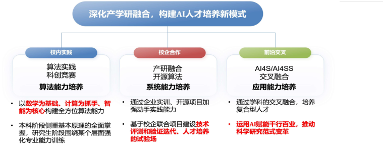
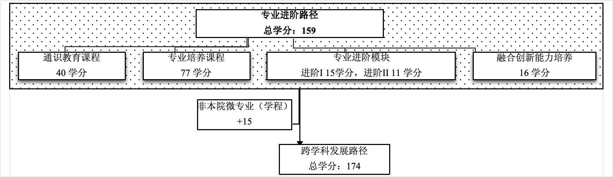
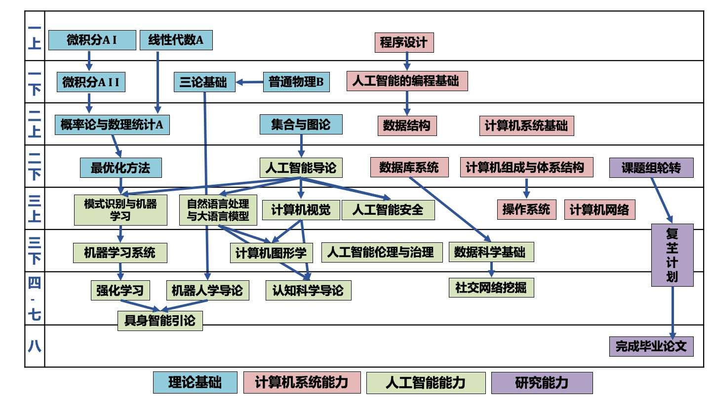

| 年级 | 2026 |
|---|---|
| 专业院系 | 计算与智能创新学院 |
| 专业 | 人工智能(计算与智能领军人才班)(香农计划) |
| 专业方向 | — |
| 班型/培养类型 | 主修 |
| 学生类别 | 普通本科生 |
| 方案类别 | MAJOR |
| 方案分类 | 理工医类专业 |
| 学习形式 | — |
| 学位类型 | 工学学士 |
| 本硕/本博融通类型 | 1 |
| 培养年限 | 8 |
| 修读学期数 | 16 |
| X 项目方案 | 是 |
| Y 项目方案 | 是 |
| 增强培养方案 | 否 |
| 双学位方案 | 否 |
| 学分字段 | — |
| 实践学分 | 40 |
| 生效日期 | 2026-09-01 |
| 失效日期 | — |
| 审核状态 | ACCEPTED |
| 流程状态 | 流程已结束 |
| 最近更新 | 2026-08-30 10:25:35 |
人工智能是指通过计算机系统模拟人类智能的能力，使其能够执行诸如学习、推理、问题求解、感知、决策等任务。复旦大学人工智能专业，响应国家新一代人工智能战略发展和上海科创中心建设需要，紧密对接国家人工智能人才培养的战略规划，聚焦人工智能的基础理论创新和重点关键技术突破，充分依托综合性大学优势，汇聚整合校内优势资源，培养具有扎实的理论基础、关键技术创新和系统设计能力，并了解人工智能应用场景和价值创造机制的多层次复合型高水平的人工智能专门人才，为人工智能领域科技创新突破和产业健康持续发展提供强有力的人才支撑。
旨在培育具有深厚底蕴与前瞻视野的人工智能领域精英。学生将系统掌握人工智能领域的核心理论、专业知识及实操技能，同时在数理科学、计算机科学等多个维度实现跨领域融合的综合素养。要求学生精通至少一门外语，具备卓越的问题解析、独立研究等能力。通过本博融通培养，构建起循序渐进、层层深入的学习路径，为学生的成长与发展提供持续且强劲的动力，助力其在人工智能领域稳步迈向顶尖行列。


1、专业进阶路径：159学分
本路径学生本博期间必须修满教学计划规定的 159 学分，包括通识教育课程 40 学分、专业培养课程 77 学分、专业进阶I修读 15 学分、专业进阶II修读 11 学分、融合创新能力培养 16 学分。
其中，本科学段需要完成 133 学分（含实践学分不低于 33 学分；含美育学分不少于2学分，其中至少在“美学和艺术史论类”或“艺术鉴赏和评论类”课程中修读1学分，并至少参与一项艺术实践活动；劳动教育不少于32学时，并满足劳动周教育要求），包括通识教育课程 36 学分、专业培养课程 66 学分、专业进阶模块修读 24 学分、融合创新能力培养 7 学分。
2、 本博融通路径：至少修满 149 学分
在通识教育课程、专业培养课程、专业进阶模块1、融合创新能力培养模块基本一致的基础上，按“人工智能本科-生物学博士"本博融通项目培养方案修读，相关要求详见生命科学学院网站：https://life.fudan.edu.cn/2c/1d/c31019a732189/page.psp 。
3、 跨学科发展路径：174学分
在专业进阶路径基础上，修读1个非本专业独立开设的微专业（学程）15学分，具体要求见教务处微专业（学程）实施方案。
（一）本科学位
1. 4年级结束时，如达到学士学位要求者授予工学学士学位。
（1）修满规定的学分，达到本科教学培养方案规定的各项要求。
（2）以符合学生毕业时所在专业教学培养方案规定的所有课程的有效成绩为准计算平均绩点，且此平均绩点大于或等于2.0。
2. 本科学段主动退出和转段考核不合格退出本博融通计划的学生，需按照人工智能本科“2+X”培养方案修读课程，如达到学士学位要求者授予工学学士学位。
（二）研究生学位
1、 达到博士学位要求者授予理学博士学位。
（1）博士学位申请人提出学位论文答辩申请时，必须已修满学校规定的学分；所有修读课程成绩合格，其中学位课程平均绩点原则上不低于 2.5。
（2）学位授予标准院系补充说明：
按照《复旦大学学位授予工作细则》的规定执行。博士生申请学位发表的论文必须以第一作者发表（含导师第一作者、申请人第二作者的情况）、且第一署名单位为复旦大学，并且满足以下要求之一：
1．在学院学术委员会认定的一区国际学术会议/期刊上发表（含录用）论文（长文）1篇；
2．在学院学术委员会认定的二区国际学术会议/期刊或一区中文学术期刊上发表（含录用）论文（长文）2篇。
2、研究生学段主动退出和博士生资格考核不合格退出本博融通计划的学生，需按照本院计算机科学与技术、网络空间安全相关硕士培养方案修读课程，如达到硕士学位要求者授予相应硕士学位。
（1）硕士学位申请人提出学位论文答辩申请时，必须已修满学校规定的学分；所有修读课程成绩合格，其中学位课程平均绩点原则上不低于 2.5。
（2）硕士学位授予标准院系补充说明：
按照《复旦大学学位授予工作细则》的规定执行。
学术学位硕士生申请学位发表的论文必须以第一作者发表（含导师第一作者、申请人第二作者的情况）、且第一署名单位为复旦大学，满足以下要求之一：
1．在学院学术委员会认定的一区/二区国际学术会议或期刊上发表（含录用）论文（长文）1篇；
2．在学院学术委员会认定的一区/二区中国学术期刊上发表（含录用）论文（长文）1篇。
专业学位硕士申请学位没有发表学术论文的要求。
1.课程体系

2.科研训练体系
针对本博融通计划学生在二年级下学期设置《课题组轮转》，要求学生在3个以上不同课题组开展无学分轮转，通过参加讨论班以及交流讨论等方式了解不同研究方向并考虑自身科研兴趣。学期结束后初步确定导师及课题组。
在三年级上学期设置《人工智能综合实践》课程，在指导教师组的带领下完成一个与本专业研究方向密切相关的专业能力综合实践，突出强调理论基础和科研技能的综合应用。学期结束后正式确定导师及课题组。
在三年级下学期设置《人工智能前沿探索》课程，在课题组导师指导下完成一个与本专业研究方向密切相关的科研课题，突出强调基础理论研究，最终成果体现为学术论文、技术报告、工具系统、开源项目或科创竞赛项目等（可合作完成）。
同时，鼓励学生结合《人工智能综合实践》和《人工智能前沿探索》课程申请FDUROP项目，并参与导师课题组的科研工作。
| 课程代码 | 课程名称 | 学分 | 要求 | 学期 | 学时 | 课程开课单位 | 备注 |
|---|---|---|---|---|---|---|---|
| GEIP20002 | 中国共产党历史 | 2.0 | 选修 | 春,秋 | 36.0；2.0/周；18周 | 马克思主义学院 | |
| GEIP20003 | 新中国史 | 2.0 | 选修 | 春,秋 | 36.0；2.0/周；18周 | 马克思主义学院 | |
| GEIP20004 | 改革开放史 | 2.0 | 选修 | 春,秋 | 36.0；2.0/周；18周 | 马克思主义学院 | |
| GEIP20005 | 社会主义发展史 | 2.0 | 选修 | 春,秋 | 36.0；2.0/周；18周 | 马克思主义学院 | |
| GEEC20071 | 中华优秀传统文化 | 2.0 | 选修 | 春,秋 | 36.0；2.0/周；18周 | 马克思主义学院 | |
| GEEC20068 | 社会主义核心价值观精讲 | 2.0 | 选修 | 春,秋 | 36.0；2.0/周；18周 | 马克思主义学院 | |
| GEIP20008 | 中国共产党经济文献选读 | 2.0 | 选修 | 36.0 | 马克思主义学院 | ||
| GEIP20009 | 《1857-1858年经济学手稿》导读 | 2.0 | 选修 | 32.0 | 马克思主义学院 | ||
| GEIP10008 | 宪法学概论 | 2.0 | 选修 | 36.0 | 马克思主义学院 | ||
| GEIP10009 | 中华民族共同体概论 | 2.0 | 选修 | 36.0 | 马克思主义学院 | ||
| GEIP10010 | 宪法文化与法治素养 | 2.0 | 选修 | 36.0 | 马克思主义学院 | ||
| GEIP10011 | 当代中国法治建设的理论与实践 | 2.0 | 选修 | 36.0 | 马克思主义学院 | ||
| GEIP10012 | 马克思主义经典著作导读：《共产党宣言》 | 2.0 | 选修 | 36.0 | 马克思主义学院 |
| 课程代码 | 课程名称 | 学分 | 要求 | 学期 | 学时 | 课程开课单位 | 备注 |
|---|---|---|---|---|---|---|---|
| GECC10004 | 古典诗词导读 | 2.0 | 选修 | 春,秋 | 36.0；2.0/周；0周 | 中国语言文学系 | |
| GECC10005 | 庄子导读 | 2.0 | 选修 | 春,秋 | 36.0；2.0/周；0周 | 中国语言文学系 | |
| GECC10006 | 《周易》与中华审美文化 | 2.0 | 选修 | 春,秋 | 36.0；2.0/周；0周 | 中国语言文学系 | |
| GECC10007 | 唐诗经典与中国文化传统 | 2.0 | 选修 | 春,秋 | 36.0；2.0/周；0周 | 中国语言文学系 | |
| GECC10008 | 唐宋八大家古文 | 2.0 | 选修 | 春,秋 | 36.0；2.0/周；0周 | 中国语言文学系 | |
| GECC10009 | 中国当代小说选读 | 2.0 | 选修 | 春,秋 | 36.0；2.0/周；0周 | 中国语言文学系 | |
| GECC10010 | 中国新诗导读 | 2.0 | 选修 | 春,秋 | 36.0；2.0/周；0周 | 中国语言文学系 | |
| GECC10011 | 鲁迅与中国现代文化 | 2.0 | 选修 | 春,秋 | 36.0；2.0/周；0周 | 中国语言文学系 | |
| GECC10012 | 《史记》导读 | 2.0 | 选修 | 春,秋 | 36.0；2.0/周；0周 | 中国语言文学系 | |
| GECC10013 | 宋词导读 | 2.0 | 选修 | 春,秋 | 36.0；2.0/周；0周 | 中国语言文学系 | |
| GECC10014 | 诗经与传统文化 | 2.0 | 选修 | 春,秋 | 36.0；2.0/周；0周 | 中国语言文学系 | |
| GECC10015 | 《红楼梦》与人生 | 2.0 | 选修 | 春,秋 | 36.0；2.0/周；0周 | 中国语言文学系 | |
| GECC10016 | 《三国志》导读 | 2.0 | 选修 | 春,秋 | 36.0；2.0/周；0周 | 中国语言文学系 | |
| GECC10017 | 《文选》与中古社会 | 2.0 | 选修 | 春,秋 | 36.0；2.0/周；0周 | 中国语言文学系 | |
| GECC10018 | 中国现代散文导读 | 2.0 | 选修 | 春,秋 | 36.0；2.0/周；0周 | 中国语言文学系 | |
| GECC10020 | 《尔雅》与中国古典语文 | 2.0 | 选修 | 春,秋 | 32.0；2.0/周；1周 | 中国语言文学系 | |
| GECC10021 | 《谈艺录》导读 | 2.0 | 选修 | 春,秋 | 36.0；2.0/周；1周 | 中国语言文学系 | |
| GECC10022 | 中国现代文学名著选讲 | 3.0 | 选修 | 春,秋 | 48.0；3.0/周；16周 | 中国语言文学系 | |
| GECC10023 | 《西游记》导读 | 2.0 | 选修 | 春,秋 | 36.0；2.0/周；18周 | 中国语言文学系 | |
| GECC10024 | 陶渊明精读 | 2.0 | 选修 | 春,秋 | 36.0；2.0/周；18周 | 中国语言文学系 | |
| GECC10025 | 现代散文经典选读 | 3.0 | 选修 | 春,秋 | 54.0；3.0/周；18周 | 中国语言文学系 | |
| GECC10027 | 汉语方言与中国文化 | 2.0 | 选修 | 春,秋 | 36.0；2.0/周；18周 | 中国语言文学系 | |
| GECC10051 | 《说文解字》与汉字源流 | 2.0 | 选修 | 春,秋 | 36.0；2.0/周；18周 | 历史学系 | |
| GECC10058 | 《十三经》导读 | 2.0 | 选修 | 春,秋 | 36.0；2.0/周；18周 | 历史学系 | |
| GECC10069 | 《资治通鉴》导读 | 3.0 | 选修 | 春,秋 | 54.0；3.0/周；18周 | 历史学系 | |
| GECC10072 | 《周易》的思维世界 | 2.0 | 选修 | 春,秋 | 36.0；2.0/周；18周 | 历史学系 | |
| GECC10083 | 《三国志》与三国史 | 3.0 | 选修 | 春,秋 | 54.0；3.0/周；18周 | 历史学系 | |
| GECC10087 | 中国历史上的民族与国家 | 2.0 | 选修 | 春,秋 | 32.0；2.0/周；16周 | 历史学系 | |
| GECC20011 | 《论语》导读 | 2.0 | 选修 | 春,秋 | 36.0；2.0/周；18周 | 哲学学院 | |
| GECC20012 | 《荀子》导读 | 2.0 | 选修 | 春,秋 | 36.0；2.0/周；18周 | 哲学学院 | |
| GECC20017 | 《孟子》导读 | 2.0 | 选修 | 春,秋 | 36.0；2.0/周；18周 | 哲学学院 | |
| GECC20020 | 《老子》导读 | 2.0 | 选修 | 春,秋 | 36.0；2.0/周；18周 | 哲学学院 | |
| GECC20036 | 《春秋》三传选读 | 3.0 | 选修 | 春,秋 | 54.0；3.0/周；18周 | 哲学学院 | |
| GEIS10024 | 中国古代思想 | 2.0 | 选修 | 暑期 | 36.0；9.0/周；4周 | 哲学学院 |
| 课程代码 | 课程名称 | 学分 | 要求 | 学期 | 学时 | 课程开课单位 | 备注 |
|---|---|---|---|---|---|---|---|
| GECC10019 | 《艺术即经验》导读 | 2.0 | 选修 | 春,秋 | 36.0；2.0/周；0周 | 中国语言文学系 | |
| GECC20009 | 笛卡尔《谈谈方法》导读 | 2.0 | 选修 | 春,秋 | 36.0；2.0/周；18周 | 哲学学院 | |
| GECC20013 | 康德《实践理性批判》精读 | 2.0 | 选修 | 春,秋 | 36.0；2.0/周；18周 | 哲学学院 | |
| GECC20014 | 《论法的精神》导读 | 2.0 | 选修 | 春,秋 | 36.0；2.0/周；18周 | 哲学学院 | |
| GECC20015 | 《法哲学原理》导读 | 2.0 | 选修 | 春,秋 | 36.0；2.0/周；18周 | 哲学学院 | |
| GECC20016 | 《尼各马可伦理学》导读 | 2.0 | 选修 | 春,秋 | 36.0；2.0/周；18周 | 哲学学院 | |
| GECC20018 | 《逻辑哲学论》导读 | 2.0 | 选修 | 春,秋 | 36.0；2.0/周；0周 | 哲学学院 | |
| GECC20021 | 《查拉图斯特拉如是说》导读 | 2.0 | 选修 | 春,秋 | 36.0；2.0/周；18周 | 哲学学院 | |
| GECC20022 | 《费尔巴哈论》研读 | 2.0 | 选修 | 春,秋 | 36.0；2.0/周；18周 | 哲学学院 | |
| GECC20023 | 西方道德哲学原著选读 | 2.0 | 选修 | 春,秋 | 36.0；2.0/周；18周 | 哲学学院 | |
| GECC20024 | 《第一哲学沉思集》导读 | 2.0 | 选修 | 春,秋 | 36.0；2.0/周；18周 | 哲学学院 | |
| GECC20025 | 休谟《人性论》导读 | 2.0 | 选修 | 春,秋 | 36.0；2.0/周；18周 | 哲学学院 | |
| GECC20026 | 《新教伦理与资本主义精神》导读 | 2.0 | 选修 | 春,秋 | 36.0；2.0/周；18周 | 哲学学院 | |
| GECC20027 | 艺术哲学与审美问题 | 3.0 | 选修 | 春,秋 | 54.0；3.0/周；18周 | 哲学学院 | |
| GECC20028 | 科学哲学与认知问题 | 2.0 | 选修 | 春,秋 | 36.0；0.0/周；18周 | 哲学学院 | |
| GECC20029 | 批判性思维与论证问题 | 2.0 | 选修 | 春,秋 | 36.0；2.0/周；18周 | 哲学学院 | |
| GECC20030 | 形而上学与知识论问题 | 2.0 | 选修 | 春,秋 | 36.0；2.0/周；18周 | 哲学学院 | |
| GECC20034 | 《理想国》导读 | 3.0 | 选修 | 春,秋 | 54.0；3.0/周；18周 | 哲学学院 | |
| GECC20037 | 卢梭论人类不平等的起源与基础 | 3.0 | 选修 | 春,秋 | 48.0；3.0/周；16周 | 哲学学院 | |
| GECC20038 | 《法华经》导读 | 2.0 | 选修 | 春,秋 | 36.0；2.0/周；18周 | 哲学学院 | |
| GECC20039 | 康德的哲学世界 | 3.0 | 选修 | 春,秋 | 54.0；3.0/周；18周 | 哲学学院 | |
| GECC20040 | 哲学视野中的人工智能 | 2.0 | 选修 | 春,秋 | 36.0；2.0/周；18周 | 哲学学院 | |
| GECC20041 | 霍布斯论“利维坦” | 3.0 | 选修 | 春,秋 | 54.0；3.0/周；18周 | 哲学学院 | |
| GECC20042 | 《共产党宣言》导读 | 3.0 | 选修 | 春,秋 | 54.0；3.0/周；18周 | 哲学学院 | |
| GECC10112 | 托克维尔论美国的民主 | 3.0 | 选修 | 春,秋 | 48.0；3.0/周；16周 | 国际关系与公共事务学院 | |
| GECC20051 | 亚里士多德《政治学》导读 | 2.0 | 选修 | 春,秋 | 36.0；2.0/周；18周 | 马克思主义学院 | |
| GECC20043 | 《功利主义》研读 | 2.0 | 选修 | 春,秋 | 36.0；2.0/周；18周 | 哲学学院 | |
| GECC20010 | 《共产党宣言》导读 | 2.0 | 选修 | 春,秋 | 36.0；2.0/周；18周 | 哲学学院 |
| 课程代码 | 课程名称 | 学分 | 要求 | 学期 | 学时 | 课程开课单位 | 备注 |
|---|---|---|---|---|---|---|---|
| GECC10028 | 文学与跨文化阅读 | 2.0 | 选修 | 春,秋 | 36.0；2.0/周；18周 | 中国语言文学系 | |
| GECC10045 | 莎士比亚作品撷英 | 3.0 | 选修 | 春,秋 | 48.0；3.0/周；16周 | 外国语言文学学院 | |
| GECC10046 | 从特洛伊到漫威世界：西方叙事传统的演变与发展 | 2.0 | 选修 | 春,秋 | 36.0；2.0/周；18周 | 外国语言文学学院 | |
| GECC10048 | 英国中世纪文学与文化 | 2.0 | 选修 | 春,秋 | 36.0；2.0/周；18周 | 外国语言文学学院 | |
| GECC10049 | 卡夫卡与全球现代性 | 3.0 | 选修 | 春,秋 | 54.0；3.0/周；18周 | 外国语言文学学院 | |
| GECC10050 | 英国经典小说与19世纪社会 | 2.0 | 选修 | 春,秋 | 32.0；2.0/周；16周 | 外国语言文学学院 | |
| GECC10052 | 文艺复兴史 | 2.0 | 选修 | 春,秋 | 36.0；2.0/周；18周 | 历史学系 | |
| GECC10054 | 中西文化交流史 | 2.0 | 选修 | 春,秋 | 36.0；2.0/周；18周 | 历史学系 | |
| GECC10055 | 《荷马史诗》导读 | 2.0 | 选修 | 春,秋 | 36.0；2.0/周；18周 | 历史学系 | |
| GECC10056 | 中国现代学科的形成 | 2.0 | 选修 | 春,秋 | 36.0；2.0/周；18周 | 历史学系 | |
| GECC10057 | 基督教文明史 | 2.0 | 选修 | 春,秋 | 36.0；2.0/周；18周 | 历史学系 | |
| GECC10059 | 欧洲文明的现代历程 | 2.0 | 选修 | 春,秋 | 36.0；2.0/周；18周 | 历史学系 | |
| GECC10060 | 历史上的中国与世界 | 2.0 | 选修 | 春,秋 | 36.0；2.0/周；18周 | 历史学系 | |
| GECC10061 | 希腊悲剧 | 2.0 | 选修 | 春,秋 | 36.0；2.0/周；18周 | 历史学系 | |
| GECC10062 | 性别与历史 | 2.0 | 选修 | 春,秋 | 36.0；2.0/周；18周 | 历史学系 | |
| GECC10063 | 日本文明的历史变迁 | 2.0 | 选修 | 春,秋 | 36.0；2.0/周；18周 | 历史学系 | |
| GECC10064 | 印度宗教经典导读 | 2.0 | 选修 | 春,秋 | 36.0；2.0/周；18周 | 历史学系 | |
| GECC10065 | 东亚文明史 | 3.0 | 选修 | 春,秋 | 54.0；3.0/周；18周 | 历史学系 | |
| GECC10066 | 古代近东的英雄与神祇 | 2.0 | 选修 | 春,秋 | 36.0；2.0/周；18周 | 历史学系 | |
| GECC10067 | 16-20世纪的欧洲殖民帝国 | 2.0 | 选修 | 春,秋 | 36.0；2.0/周；18周 | 历史学系 | |
| GECC10068 | 中世纪欧洲文明 | 2.0 | 选修 | 春,秋 | 36.0；2.0/周；18周 | 历史学系 | |
| GECC10070 | 古埃及文明 | 2.0 | 选修 | 春,秋 | 36.0；2.0/周；18周 | 历史学系 | |
| GECC10071 | 古希腊神话 | 2.0 | 选修 | 春,秋 | 36.0；2.0/周；18周 | 历史学系 | |
| GECC10073 | 20世纪的中美关系与东亚世界 | 2.0 | 选修 | 春,秋 | 36.0；2.0/周；18周 | 历史学系 | |
| GECC10075 | 古代两河流域考古与艺术 | 3.0 | 选修 | 春,秋 | 54.0；3.0/周；18周 | 历史学系 | |
| GECC10077 | 现代欧洲思想观念 | 2.0 | 选修 | 春,秋 | 36.0；2.0/周；18周 | 历史学系 | |
| GECC10078 | 艺术与文明-公元1400年之前 | 3.0 | 选修 | 春,秋 | 54.0；3.0/周；18周 | 历史学系 | |
| GECC10084 | 近现代中西文化交流 | 2.0 | 选修 | 春,秋 | 36.0；2.0/周；18周 | 历史学系 | |
| GECC10085 | 现代非洲与世界 | 2.0 | 选修 | 春,秋 | 36.0；2.0/周；18周 | 历史学系 | |
| GECC10086 | 雅典-斯巴达战争年代的古希腊文学 | 2.0 | 选修 | 春,秋 | 36.0；2.0/周；18周 | 历史学系 | |
| GECC20019 | 《古兰经》与伊斯兰文明 | 2.0 | 选修 | 春,秋 | 36.0；2.0/周；18周 | 哲学学院 | |
| GECC20031 | 希伯来圣经 | 2.0 | 选修 | 春,秋 | 36.0；2.0/周；18周 | 哲学学院 | |
| GECC20032 | 启蒙运动 | 2.0 | 选修 | 春,秋 | 36.0；2.0/周；18周 | 哲学学院 | |
| GECC20033 | 新约历史、文学与宗教 | 2.0 | 选修 | 春,秋 | 36.0；2.0/周；18周 | 哲学学院 | |
| GECC10113 | 修昔底德战争史 | 3.0 | 选修 | 春,秋 | 48.0；3.0/周；16周 | 国际关系与公共事务学院 | |
| GECC20052 | 欧洲公法发展与现代国家观念 | 2.0 | 选修 | 春,秋 | 2.0；36.0/周；18周 | 马克思主义学院 | |
| GECC10053 | 古希腊文明研究 | 2.0 | 选修 | 春,秋 | 36.0；2.0/周；18周 | 历史学系 | |
| GEIS10027 | 美国政治与对外政策 | 2.0 | 选修 | 暑期 | 36.0；4.0/周；9周 | 国际关系与公共事务学院 | |
| GEIS10008 | 中国、第三世界与冷战 | 2.0 | 选修 | 暑期 | 36.0；2.0/周；18周 | 历史学系 |
| 课程代码 | 课程名称 | 学分 | 要求 | 学期 | 学时 | 课程开课单位 | 备注 |
|---|---|---|---|---|---|---|---|
| GECC10032 | 经济与社会 | 3.0 | 选修 | 春,秋 | 54.0；3.0/周；18周 | 经济学院 | |
| GECC10089 | 传播与社会 | 3.0 | 选修 | 春,秋 | 54.0；3.0/周；18周 | 新闻学院 | |
| GECC10090 | 人权与法 | 2.0 | 选修 | 春,秋 | 36.0；2.0/周；0周 | 法学院 | |
| GECC10091 | 法治理念与实践 | 2.0 | 选修 | 春,秋 | 36.0；2.0/周；0周 | 法学院 | |
| GECC10092 | 法律与科技文明 | 2.0 | 选修 | 春,秋 | 36.0；2.0/周；0周 | 法学院 | |
| GECC10093 | 全球化时代的法律冲突与对话 | 2.0 | 选修 | 春,秋 | 36.0；2.0/周；0周 | 法学院 | |
| GECC20008 | 法律与社会 | 3.0 | 选修 | 春,秋 | 54.0；3.0/周；18周 | 法学院 | |
| GECC10111 | 政治与社会 | 2.0 | 选修 | 春,秋 | 36.0；2.0/周；1周 | 国际关系与公共事务学院 | |
| GECC10114 | 社会科学经典导读 | 2.0 | 选修 | 春,秋 | 32.0；2.0/周；1周 | 社会发展与公共政策学院 | |
| GECC10115 | 社会科学研究方法 | 3.0 | 选修 | 春,秋 | 48.0；3.0/周；16周 | 社会发展与公共政策学院 | |
| GECC10116 | 文化与社会 | 3.0 | 选修 | 春,秋 | 48.0；3.0/周；16周 | 社会发展与公共政策学院 | |
| JWCH110031 | 城市建筑媒介与跨学科传播 | 2.0 | 选修 | 春,秋 | 34.0；2.0/周；17周 | 教务处 | |
| GECC10117 | 城市化与发展 | 2.0 | 选修 | 春,暑期 | 36.0；3.0/周；12周 | 社会发展与公共政策学院 | |
| GEIS30002 | 货币、银行与经济 | 2.0 | 选修 | 暑期 | 36.0；0.0/周；0周 | 经济学院 | |
| GEIS10028 | 心理学与生活 | 2.0 | 选修 | 暑期 | 36.0；9.0/周；4周 | 社会发展与公共政策学院 | |
| GEIS10013 | 全球化与中国媒体和政治 | 2.0 | 选修 | 暑期 | 36.0；9.0/周；4周 | 新闻学院 | |
| GEIS30020 | 中国金融市场 | 2.0 | 选修 | 暑期 | 36.0；9.0/周；4周 | 经济学院 | |
| GEIS30019 | 经济史 | 2.0 | 选修 | 暑期 | 36.0；18.0/周；2周 | 经济学院 | |
| GEIS30005 | 发展经济学 | 2.0 | 选修 | 暑期 | 36.0；9.0/周；4周 | 教务处 | |
| GEIS10017 | 中国法律文化 | 2.0 | 选修 | 暑期 | 36.0；9.0/周；4周 | 法学院 | |
| GEIS30003 | 当代中国经济 | 2.0 | 选修 | 暑期 | 36.0；9.0/周；4周 | 经济学院 | |
| GEIS10014 | 社会媒体和社会网络 | 2.0 | 选修 | 暑期 | 36.0；9.0/周；4周 | 经济学院 | |
| GEIS10029 | 社会网络与中国社会 | 2.0 | 选修 | 暑期 | 36.0；9.0/周；4周 | 社会发展与公共政策学院 | |
| GEIS10030 | 一带一路和中国在发展中国家的影响 | 2.0 | 选修 | 暑期 | 36.0；9.0/周；4周 | 社会发展与公共政策学院 | |
| GEIS40002 | 中国数字经济和人工智能的法律规制 | 2.0 | 选修 | 暑期 | 36.0 | 经济学院 |
| 课程代码 | 课程名称 | 学分 | 要求 | 学期 | 学时 | 课程开课单位 | 备注 |
|---|---|---|---|---|---|---|---|
| GECC10002 | 化学与人类 | 2.0 | 选修 | 春,秋 | 36.0；2.0/周；18周 | 化学系 | |
| GECC10003 | 化学与中国文明 | 3.0 | 选修 | 春,秋 | 54.0；3.0/周；18周 | 化学系 | |
| GECC10029 | 从计算到智能 | 2.0 | 选修 | 春,秋 | 36.0；2.0/周；0周 | 计算与智能创新学院 | |
| GECC10030 | 计算思维 | 2.0 | 选修 | 春,秋 | 72.0；4.0/周；0周 | 计算与智能创新学院 | |
| GECC10088 | 信号、信息与社会 | 2.0 | 选修 | 春,秋 | 36.0；2.0/周；18周 | 未来信息创新学院 | |
| GECC10094 | 无处不在的大分子 | 2.0 | 选修 | 春,秋 | 36.0；2.0/周；18周 | 高分子科学系 | |
| GECC10095 | 材料与社会 | 2.0 | 选修 | 春,秋 | 36.0；2.0/周；18周 | 智能材料与未来能源创新学院 | |
| GECC10096 | 数据的背后 | 2.0 | 选修 | 春,秋 | 36.0；2.0/周；18周 | 数学科学学院 | |
| GECC10097 | 随机现象与概率 | 2.0 | 选修 | 春,秋 | 36.0；2.0/周；18周 | 数学科学学院 | |
| GECC10098 | 航空与航天 | 2.0 | 选修 | 春,秋 | 36.0；2.0/周；18周 | 智能机器人与先进制造创新学院 | |
| GECC20046 | 物理与文化 | 2.0 | 选修 | 春,秋 | 36.0；2.0/周；18周 | 物理学系 | |
| GECC20047 | 天体物理与宇宙论的演化 | 2.0 | 选修 | 春,秋 | 36.0；2.0/周；18周 | 物理学系 | |
| GECC20048 | 人文的物理学 | 2.0 | 选修 | 春,秋 | 36.0；2.0/周；18周 | 物理学系 | |
| GECC20049 | 量子科学与未来计算 | 2.0 | 选修 | 春,秋 | 36.0；2.0/周；18周 | 物理学系 | |
| AIB119004 | 智能社会与“元宇宙” | 2.0 | 选修 | 春,秋 | 36.0；2.0/周；18周 | 大数据学院 | |
| GECC20044 | 超级智能与人类文明 | 2.0 | 选修 | 春,秋 | 36.0；2.0/周；18周 | 哲学学院 | |
| GECC20001 | 从生物智能到机器智能 | 2.0 | 选修 | 春,秋 | 36.0；0.0/周；1周 | 计算与智能创新学院 | |
| GEIS10001 | 金融科技中的人工智能 | 2.0 | 选修 | 暑期 | 36.0；0.0/周；1周 | 经济学院 | |
| GEIS20001 | 计算理论导论 | 2.0 | 选修 | 暑期 | 36.0；0.0/周；1周 | 计算与智能创新学院 | |
| GEIS30010 | 数据科学基础 | 2.0 | 选修 | 暑期 | 36.0；9.0/周；4周 | 经济学院 | |
| PHIL20013 | 数理逻辑 | 2.0 | 选修 | 暑期 | 36.0；2.0/周；18周 | 哲学学院 |
| 课程代码 | 课程名称 | 学分 | 要求 | 学期 | 学时 | 课程开课单位 | 备注 |
|---|---|---|---|---|---|---|---|
| GECC10001 | 宜居地球与人类未来 | 2.0 | 选修 | 春,秋 | 36.0；2.0/周；18周 | 大气与海洋科学系 | |
| GECC20002 | 生命进化论 | 2.0 | 选修 | 春,秋 | 36.0；2.0/周；18周 | 生命科学学院 | |
| GECC20003 | 微生物与人类健康 | 2.0 | 选修 | 春,秋 | 36.0；2.0/周；18周 | 生命科学学院 | |
| GECC20004 | 人类进化 | 3.0 | 选修 | 春,秋 | 54.0；3.0/周；18周 | 生命科学学院 | |
| GECC20005 | 生态学：管理大自然的经济学 | 3.0 | 选修 | 春,秋 | 54.0；3.0/周；18周 | 生命科学学院 | |
| GECC20006 | 生物技术与人类社会 | 3.0 | 选修 | 春,秋 | 54.0；3.0/周；18周 | 生命科学学院 | |
| GECC20007 | 身边的基因科学 | 3.0 | 选修 | 春,秋 | 54.0；3.0/周；18周 | 生命科学学院 | |
| GECC10033 | 环境与人类 | 2.0 | 选修 | 春,秋 | 36.0；2.0/周；18周 | 环境科学与工程系 | |
| GECC10034 | 环境灾害与启示 | 2.0 | 选修 | 春,秋 | 36.0；2.0/周；18周 | 环境科学与工程系 | |
| GECC10035 | 生态文明：人与自然和谐共生 | 2.0 | 选修 | 春,秋 | 32.0；2.0/周；16周 | 环境科学与工程系 | |
| GECC10076 | 医学的社会文化史 | 3.0 | 选修 | 春,秋 | 54.0；3.0/周；18周 | 历史学系 | |
| GECC10081 | 认识地球 | 2.0 | 选修 | 春,秋 | 36.0；2.0/周；18周 | 历史学系 | |
| GECC20055 | 病原生物与人类 | 2.0 | 选修 | 春,秋 | 36.0；2.0/周；0周 | 基础医学院 | |
| GECC20053 | 元宇宙与未来医学 | 2.0 | 选修 | 春,秋 | 32.0；2.0/周；16周 | 中山临床医学院 | |
| GECC10105 | 医药伦理 | 2.0 | 选修 | 春,秋 | 36.0；2.0/周；0周 | 药学院 | |
| GECC10106 | 药物·生命·社会 | 2.0 | 选修 | 春,秋 | 36.0；2.0/周；0周 | 药学院 | |
| GECC10107 | 环境与人群健康 | 2.0 | 选修 | 春,秋 | 36.0；2.0/周；18周 | 公共卫生学院 | |
| GECC10108 | 社会发展与健康 | 2.0 | 选修 | 春,秋 | 36.0；2.0/周；18周 | 公共卫生学院 | |
| GECC30001 | 改变世界的流行病 | 2.0 | 选修 | 春,秋 | 36.0；2.0/周；18周 | 公共卫生学院 | |
| GECC10109 | 公共卫生应急与现代社会 | 2.0 | 选修 | 春,秋 | 36.0；2.0/周；18周 | 公共卫生学院 | |
| GECC20050 | 生命科学史 | 2.0 | 选修 | 春,秋 | 36.0；2.0/周；18周 | 马克思主义学院 | |
| JWCH110026 | 可持续智能城镇化 | 1.0 | 选修 | 春,秋 | 17.0；0.0/周；1周 | 教务处 | |
| AIB219005 | 神经、认知与类脑智能 | 3.0 | 选修 | 春,秋 | 54.0；3.0/周；18周 | 生命科学学院 | |
| GECC20054 | 癌症：科学、人文与社会 | 2.0 | 选修 | 春,秋 | 32.0 | 附属浦东医院 | |
| GEIS30022 | 文化探索之旅：神奇的中国传统医学 | 2.0 | 选修 | 暑期 | 36.0；18.0/周；2周 | 附属静安区中心医院 | |
| GEIS10006 | 可再生能源：基本原理与实际应用 | 2.0 | 选修 | 暑期 | 36.0；9.0/周；4周 | 环境科学与工程系 | |
| GEIS40001 | 上海医疗服务的多样性 | 1.0 | 选修 | 暑期 | 18.0；9.0/周；2周 | 临床医学院 | |
| SOCI30042 | 文化与健康 | 2.0 | 选修 | 暑期 | 36.0；2.0/周；18周 | 社会发展与公共政策学院 | |
| GEXZ30001 | 常见疾病与健康促进 | 3.0 | 选修 | 春 | 54.0；27.0/周；2周 | 华山临床医学院 |
| 课程代码 | 课程名称 | 学分 | 要求 | 学期 | 学时 | 课程开课单位 | 备注 |
|---|---|---|---|---|---|---|---|
| GECC10026 | 游戏与文化 | 2.0 | 选修 | 春,秋 | 36.0；2.0/周；18周 | 中国语言文学系 | |
| GECC10036 | 音乐理论与实践 | 2.0 | 选修 | 春,秋 | 36.0；2.0/周；18周 | 艺术教育中心 | |
| GECC10037 | 中国戏曲·京剧 | 2.0 | 选修 | 春,秋 | 36.0；2.0/周；18周 | 艺术教育中心 | |
| GECC10038 | 中国戏曲·昆曲 | 2.0 | 选修 | 春,秋 | 36.0；2.0/周；0周 | 艺术教育中心 | |
| GECC10039 | 陶艺与雕塑 | 2.0 | 选修 | 春,秋 | 36.0；2.0/周；18周 | 艺术教育中心 | |
| GECC10040 | 戏剧经典与表达·西方戏剧 | 2.0 | 选修 | 春,秋 | 36.0；0.0/周；18周 | 艺术教育中心 | |
| GECC10041 | 达芬奇笔记与绘画实践 | 3.0 | 选修 | 春,秋 | 54.0；3.0/周；18周 | 艺术教育中心 | |
| GECC10042 | 西方古典建筑 | 3.0 | 选修 | 春,秋 | 54.0；3.0/周；18周 | 艺术教育中心 | |
| GECC10043 | 诗意的音画世界 | 3.0 | 选修 | 春,秋 | 54.0；3.0/周；18周 | 艺术教育中心 | |
| GECC10044 | 走进电影世界 | 3.0 | 选修 | 春,秋 | 54.0；3.0/周；18周 | 艺术教育中心 | |
| GECC10047 | 欧洲电影解析与实践 | 3.0 | 选修 | 春,秋 | 54.0；3.0/周；18周 | 外国语言文学学院 | |
| GECC10079 | 玺印赏析与篆刻实践 | 2.0 | 选修 | 春,秋 | 36.0；2.0/周；18周 | 历史学系 | |
| GECC10082 | 中国古代艺术史专题 | 2.0 | 选修 | 春,秋 | 36.0；2.0/周；18周 | 历史学系 | |
| GECC10099 | 文物赏析与体验 | 2.0 | 选修 | 春,秋 | 36.0；2.0/周；18周 | 文物与博物馆学系 | |
| GECC10100 | 博物馆文化解读 | 2.0 | 选修 | 春,秋 | 36.0；2.0/周；18周 | 文物与博物馆学系 | |
| GECC10101 | 考古与人类 | 2.0 | 选修 | 春,秋 | 36.0；2.0/周；18周 | 文物与博物馆学系 | |
| GECC10102 | 中国古代物质文化·读懂青铜器 | 3.0 | 选修 | 春,秋 | 54.0；3.0/周；18周 | 文物与博物馆学系 | |
| GECC10103 | 中国古代物质文化·玉与瓷的技艺之美 | 3.0 | 选修 | 春,秋 | 54.0；3.0/周；18周 | 文物与博物馆学系 | |
| GECC10104 | 中国古代物质文化·生活美学 | 3.0 | 选修 | 春,秋 | 54.0；3.0/周；18周 | 文物与博物馆学系 | |
| GECC20035 | 西方现代艺术：历史与理论 | 2.0 | 选修 | 春,秋 | 36.0；2.0/周；18周 | 哲学学院 | |
| GECC10110 | 中国书法艺术 | 2.0 | 选修 | 春,秋 | 32.0；2.0/周；16周 | 公共卫生学院 | |
| GEEC10099 | 影视剧艺术 | 2.0 | 选修 | 春,秋 | 36.0；2.0/周；18周 | 艺术教育中心 | |
| GEEC10101 | 当代电影美学 | 2.0 | 选修 | 春,秋 | 36.0；2.0/周；18周 | 艺术教育中心 | |
| GEEC10102 | 中外音乐审美 | 2.0 | 选修 | 春,秋 | 36.0；2.0/周；18周 | 艺术教育中心 | |
| GEEC10103 | 中西美术 | 2.0 | 选修 | 春,秋 | 36.0；2.0/周；18周 | 艺术教育中心 | |
| GEEC10108 | 中国音乐史 | 2.0 | 选修 | 春,秋 | 36.0；2.0/周；18周 | 艺术教育中心 | |
| GEEC10109 | 数码钢琴演奏（初级） | 2.0 | 选修 | 春,秋 | 36.0；2.0/周；18周 | 艺术教育中心 | |
| GEEC20004 | 数码钢琴演奏（中级） | 2.0 | 选修 | 春,秋 | 36.0；2.0/周；18周 | 艺术教育中心 | |
| GEEC10110 | 中外电影比较研究 | 2.0 | 选修 | 春,秋 | 36.0；2.0/周；18周 | 艺术教育中心 | |
| GEEC10111 | 合唱作品赏析与实践（初级） | 2.0 | 选修 | 春,秋 | 36.0；2.0/周；18周 | 艺术教育中心 | |
| GEEC10112 | 二胡演奏艺术及技法 | 2.0 | 选修 | 春,秋 | 36.0；2.0/周；18周 | 艺术教育中心 | |
| GEEC10113 | 世界民族音乐文化 | 2.0 | 选修 | 春,秋 | 36.0；2.0/周；18周 | 艺术教育中心 | |
| GEEC10114 | 美学与人生 | 2.0 | 选修 | 春,秋 | 36.0；2.0/周；18周 | 艺术教育中心 | |
| GEEC10115 | 中外建筑与环境艺术 | 2.0 | 选修 | 春,秋 | 36.0；2.0/周；18周 | 艺术教育中心 | |
| GEEC10116 | 现代设计思维 | 2.0 | 选修 | 春,秋 | 36.0；2.0/周；18周 | 艺术教育中心 | |
| GEEC10117 | 构成艺术与设计思维 | 2.0 | 选修 | 春,秋 | 36.0；2.0/周；18周 | 艺术教育中心 | |
| GEEC10118 | 数码艺术设计基础 | 2.0 | 选修 | 春,秋 | 36.0；2.0/周；18周 | 艺术教育中心 | |
| GEEC10119 | 新媒体艺术 | 2.0 | 选修 | 春,秋 | 36.0；2.0/周；18周 | 艺术教育中心 | |
| GEEC10120 | 数字动画艺术与设计 | 2.0 | 选修 | 春,秋 | 36.0；2.0/周；18周 | 艺术教育中心 | |
| GEEC10121 | 外国代表性舞蹈表演与赏析 | 2.0 | 选修 | 春,秋 | 36.0；2.0/周；18周 | 艺术教育中心 | |
| GEEC10122 | 建筑空间艺术之旅 | 2.0 | 选修 | 春,秋 | 36.0；2.0/周；18周 | 艺术教育中心 | |
| GEEC10123 | 视觉艺术流派解析 | 2.0 | 选修 | 春,秋 | 36.0；2.0/周；18周 | 艺术教育中心 | |
| GEEC10124 | 建筑艺术创意解读 | 2.0 | 选修 | 春,秋 | 36.0；2.0/周；18周 | 艺术教育中心 | |
| GEEC10125 | 音乐美学与实践 | 2.0 | 选修 | 春,秋 | 36.0；2.0/周；18周 | 艺术教育中心 | |
| GEEC10126 | 影片精读：方法与实践 | 2.0 | 选修 | 春,秋 | 36.0；2.0/周；18周 | 艺术教育中心 | |
| GEEC10127 | 中国民族民间舞表演与赏析 | 2.0 | 选修 | 春,秋 | 36.0；2.0/周；18周 | 艺术教育中心 | |
| GEEC10129 | 素描 | 2.0 | 选修 | 春,秋 | 36.0；2.0/周；18周 | 艺术教育中心 | |
| GEEC10130 | 色彩 | 2.0 | 选修 | 春,秋 | 36.0；2.0/周；18周 | 艺术教育中心 | |
| GEEC10131 | 写生 | 2.0 | 选修 | 春,秋 | 36.0；2.0/周；18周 | 艺术教育中心 | |
| GEEC10132 | 微电影与微时代 | 2.0 | 选修 | 春,秋 | 36.0；2.0/周；18周 | 艺术教育中心 | |
| GEEC10133 | 微影人的自我修养 | 2.0 | 选修 | 春,秋 | 36.0；2.0/周；18周 | 艺术教育中心 | |
| GEEC10134 | 中国传统建筑文化 | 2.0 | 选修 | 春,秋 | 36.0；2.0/周；18周 | 艺术教育中心 | |
| GEEC10135 | 合唱与指挥 | 2.0 | 选修 | 春,秋 | 36.0；2.0/周；18周 | 艺术教育中心 | |
| GEEC10136 | 戏剧表演 | 2.0 | 选修 | 春,秋 | 36.0；2.0/周；18周 | 艺术教育中心 | |
| GEEC10137 | 古琴艺术导赏与演奏入门 | 2.0 | 选修 | 春,秋 | 36.0；2.0/周；18周 | 艺术教育中心 | |
| GEEC10138 | 虚拟空间设计与表现 | 2.0 | 选修 | 春,秋 | 36.0；2.0/周；18周 | 艺术教育中心 | |
| GEEC10139 | 数字影像艺术 | 2.0 | 选修 | 春,秋 | 36.0；2.0/周；18周 | 艺术教育中心 | |
| GEEC10140 | 中国民族器乐概论 | 2.0 | 选修 | 春,秋 | 36.0；2.0/周；18周 | 艺术教育中心 | |
| GEEC20005 | 合唱作品赏析与实践（中级） | 2.0 | 选修 | 春,秋 | 36.0；2.0/周；18周 | 艺术教育中心 | |
| GEEC10141 | 声乐（美声唱法） | 2.0 | 选修 | 春,秋 | 36.0；2.0/周；18周 | 艺术教育中心 | |
| GEEC10142 | 后人类艺术观察 | 2.0 | 选修 | 春,秋 | 36.0；2.0/周；18周 | 艺术教育中心 | |
| GEEC10143 | 声乐（民族唱法） | 2.0 | 选修 | 春,秋 | 36.0；2.0/周；18周 | 艺术教育中心 | |
| GEEC10144 | 普拉提器械初级 | 2.0 | 选修 | 春,秋 | 36.0；2.0/周；18周 | 艺术教育中心 | |
| GEEC10100 | 校园歌曲赏析和创作 | 2.0 | 选修 | 春,秋 | 36.0；2.0/周；18周 | 艺术教育中心 | |
| GEXZ10009 | 艺术与创造力（陶艺） | 3.0 | 选修 | 春,秋 | 54.0；3.0/周；18周 | 艺术教育中心 | |
| GEXZ10010 | 古村落的保护与开发 | 3.0 | 选修 | 暑期 | 54.0；27.0/周；2周 | 艺术教育中心 | |
| GEXZ10011 | 原本性音乐教育与社区服务 | 3.0 | 选修 | 暑期 | 54.0；27.0/周；2周 | 艺术教育中心 | |
| GEXZ10012 | 油画风景写生 | 3.0 | 选修 | 暑期 | 54.0；27.0/周；2周 | 艺术教育中心 | |
| GEXZ10013 | 多声部声乐实践 | 3.0 | 选修 | 春,秋 | 54.0；3.0/周；18周 | 艺术教育中心 | |
| GEXZ10014 | 植物标本的艺术创作 | 3.0 | 选修 | 暑期 | 54.0；27.0/周；2周 | 艺术教育中心 | |
| GEXZ10016 | 虚拟现实艺术与在地创新 | 3.0 | 选修 | 春,秋 | 54.0；3.0/周；18周 | 艺术教育中心 | |
| GEXZ10017 | 丝绸之路与古陶瓷外销 | 3.0 | 选修 | 暑期 | 54.0；27.0/周；2周 | 艺术教育中心 | |
| GEXZ10015 | 视觉艺术现场研究 | 3.0 | 选修 | 春,秋 | 54.0；3.0/周；18周 | 艺术教育中心 | |
| JWCH110024 | 时尚与跨界设计 | 2.0 | 选修 | 春,秋 | 34.0；0.0/周；1周 | 教务处 | |
| JWCH110025 | 星期音乐会 | 2.0 | 选修 | 春,秋 | 34.0；0.0/周；1周 | 教务处 | |
| JWCH110027 | 中国传统绘画工笔技法 | 2.0 | 选修 | 春,秋 | 34.0；0.0/周；1周 | 教务处 | |
| JWCH110028 | 传承与创造:砖木雕的“技”与“艺” | 3.0 | 选修 | 春,秋 | 51.0；0.0/周；1周 | 教务处 | |
| JWCH110029 | 城市色彩 | 2.0 | 选修 | 春,秋 | 34.0；0.0/周；1周 | 教务处 | |
| JWCH110030 | 阅读当代中国建筑 | 2.0 | 选修 | 春,秋 | 34.0；0.0/周；1周 | 教务处 | |
| JWCH110032 | 中国玉石及玉文化鉴赏 | 2.0 | 选修 | 春,秋 | 34.0；2.0/周；17周 | 教务处 | |
| JWCH110033 | 木刻版画 | 3.0 | 选修 | 春,秋 | 51.0；3.0/周；17周 | 教务处 | |
| JWCH110034 | 当代艺术评论 | 2.0 | 选修 | 春,秋 | 34.0；2.0/周；17周 | 教务处 | |
| JWCH110035 | 文化遗产概览 | 2.0 | 选修 | 春,秋 | 34.0；2.0/周；17周 | 教务处 | |
| JWCH110036 | 设计、生活与创新 | 2.0 | 选修 | 春,秋 | 34.0；2.0/周；17周 | 教务处 | |
| JWCH110037 | 工匠文化 | 2.0 | 选修 | 春,秋 | 34.0；2.0/周；17周 | 教务处 | |
| JWCH110038 | 植物文化与古典园林空间 | 2.0 | 选修 | 春,秋 | 34.0；2.0/周；17周 | 教务处 | |
| GECC20045 | 中国古典审美理想 | 2.0 | 选修 | 春,暑期,秋 | 36.0；2.0/周；18周 | 哲学学院 | |
| GEEC10002 | 声乐疗愈 | 2.0 | 选修 | 春,秋 | 36.0；2.0/周；18周 | 艺术教育中心 | |
| GEEC20001 | 未来叙事与创新表达 | 2.0 | 选修 | 春,秋 | 36.0；2.0/周；18周 | 艺术教育中心 | |
| GEEC10001 | 戏剧导演 | 2.0 | 选修 | 春,秋 | 36.0；2.0/周；18周 | 艺术教育中心 | |
| GEEC10439 | 文明互鉴视域下的合作艺术 | 3.0 | 选修 | 春,暑期,秋 | 54.0 | 艺术教育中心 | |
| GEEC10440 | 中国古典音乐与人文精神 | 2.0 | 选修 | 春,暑期,秋 | 36.0 | 艺术教育中心 | |
| GEXZ10035 | 艺术与创造力（马赛克） | 3.0 | 选修 | 春,暑期,秋 | 54.0 | 艺术教育中心 |
| 课程代码 | 课程名称 | 学分 | 要求 | 学期 | 学时 | 课程开课单位 | 备注 |
|---|---|---|---|---|---|---|---|
| GECC10118 | 人类政治的哲学原理 | 0.5 | 选修 | 春,秋 | 8.0 | 国际关系与公共事务学院 | |
| GECC10119 | 国家治理的科学逻辑 | 0.5 | 选修 | 春,秋 | 8.0 | 国际关系与公共事务学院 | |
| GECC10120 | 动物考古与古代文明 | 0.5 | 选修 | 春,秋 | 8.0 | 文物与博物馆学系 | |
| GECC10121 | 地球、城市与人类未来 | 1.0 | 选修 | 春,秋 | 16.0 | 环境科学与工程系 | |
| GECC20057 | 中国文化之美的跨文化表达 | 0.5 | 选修 | 8.0 | 大学英语教学部 | ||
| GECC10123 | 智能纤维与可穿戴电子世界 | 1.0 | 选修 | 16.0 | 高分子科学系 | ||
| GECC10124 | 数学分析的理性与浪漫 | 0.5 | 选修 | 8.0 | 数学科学学院 | ||
| GECC10122 | 社会学视野下的关系和金钱 | 1.0 | 选修 | 春,秋 | 16.0 | 社会发展与公共政策学院 | |
| GECC10125 | 科幻世界中的经济分析 | 0.5 | 选修 | 8.0 | 经济学院 | ||
| GECC10126 | 自然观察与科普实践 | 1.0 | 选修 | 18.0 | 生命科学学院 | ||
| GECC10127 | 自然观察与科普基础 | 0.5 | 选修 | 8.0 | 生命科学学院 |
| 课程代码 | 课程名称 | 学分 | 要求 | 学期 | 学时 | 课程开课单位 | 备注 |
|---|---|---|---|---|---|---|---|
| GESS10001 | 大学生国家安全教育 | 1.0 | 必修 | 秋 | 16.0；2.0/周；8周 | 国际关系与公共事务学院 |
| 课程代码 | 课程名称 | 学分 | 要求 | 学期 | 学时 | 课程开课单位 | 备注 |
|---|---|---|---|---|---|---|---|
| GEEF30032 | 复旦大学英语水平测试 | 0.0 | 必修 | 春,秋 | 0.0；0.0/周；0周 | 大学英语教学部 |
| 课程代码 | 课程名称 | 学分 | 要求 | 学期 | 学时 | 课程开课单位 | 备注 |
|---|---|---|---|---|---|---|---|
| GEEF30033 | 大学英语高阶课程 | 2.0 | 选修 | 春,秋 | 0.0；0.0/周；1周 | 大学英语教学部 |
| 课程代码 | 课程名称 | 学分 | 要求 | 学期 | 学时 | 课程开课单位 | 备注 |
|---|---|---|---|---|---|---|---|
| GESF10005 | 基础俄语Ⅰ | 2.0 | 选修 | 春,秋 | 36.0；2.0/周；0周 | 外国语言文学学院 | |
| GESF20001 | 基础俄语Ⅱ | 2.0 | 选修 | 春,秋 | 36.0；2.0/周；0周 | 外国语言文学学院 | |
| GESF10006 | 基础法语Ⅰ | 2.0 | 选修 | 春,秋 | 36.0；2.0/周；0周 | 外国语言文学学院 | |
| GESF20002 | 基础法语Ⅱ | 2.0 | 选修 | 春,秋 | 36.0；2.0/周；0周 | 外国语言文学学院 | |
| GESF10007 | 基础日语Ⅰ | 2.0 | 选修 | 春,秋 | 36.0；2.0/周；0周 | 外国语言文学学院 | |
| GESF20003 | 基础日语 II | 2.0 | 选修 | 春,秋 | 36.0；2.0/周；0周 | 外国语言文学学院 | |
| GESF10008 | 基础韩语Ⅰ | 2.0 | 选修 | 春,秋 | 36.0；2.0/周；0周 | 外国语言文学学院 | |
| GESF20004 | 基础韩语Ⅱ | 2.0 | 选修 | 春,秋 | 36.0；2.0/周；0周 | 外国语言文学学院 | |
| GESF10009 | 基础德语Ⅰ | 2.0 | 选修 | 春,秋 | 36.0；2.0/周；0周 | 外国语言文学学院 | |
| GESF20005 | 基础德语Ⅱ | 2.0 | 选修 | 春,秋 | 36.0；2.0/周；0周 | 外国语言文学学院 | |
| GESF10010 | 基础西班牙语Ⅰ | 4.0 | 选修 | 春,秋 | 72.0；4.0/周；0周 | 外国语言文学学院 | |
| GESF20006 | 基础西班牙语Ⅱ | 4.0 | 选修 | 春,秋 | 72.0；4.0/周；0周 | 外国语言文学学院 | |
| GESF10011 | 基础瑞典语Ⅰ | 4.0 | 选修 | 春,秋 | 72.0；4.0/周；0周 | 外国语言文学学院 | |
| GESF40004 | 梵语Ⅰ | 2.0 | 选修 | 春,秋 | 36.0；2.0/周；18周 | 哲学学院 | |
| GESF40005 | 梵语Ⅱ | 2.0 | 选修 | 春,秋 | 36.0；2.0/周；18周 | 哲学学院 | |
| GESF40006 | 梵语Ⅲ | 2.0 | 选修 | 春,秋 | 36.0；2.0/周；18周 | 哲学学院 | |
| GESF40007 | 梵语Ⅳ | 2.0 | 选修 | 春,秋 | 36.0；2.0/周；18周 | 哲学学院 | |
| GESF10012 | 丹麦语 I | 4.0 | 选修 | 春,秋 | 64.0；4.0/周；1周 | 外国语言文学学院 | |
| GESF20007 | 丹麦语 II | 4.0 | 选修 | 春,秋 | 64.0；4.0/周；1周 | 外国语言文学学院 | |
| GESF10013 | 现代希伯来语I | 4.0 | 选修 | 春,秋 | 64.0；4.0/周；16周 | 外国语言文学学院 | |
| GESF20008 | 现代希伯来语II | 4.0 | 选修 | 春,秋 | 64.0；4.0/周；16周 | 外国语言文学学院 | |
| GESF10014 | 阿拉伯语I | 4.0 | 选修 | 春,秋 | 72.0；4.0/周；18周 | 外国语言文学学院 | |
| GESF20009 | 阿拉伯语II | 4.0 | 选修 | 春,秋 | 72.0；4.0/周；18周 | 外国语言文学学院 | |
| GESF30001 | 阿拉伯语III | 4.0 | 选修 | 春,秋 | 72.0；4.0/周；18周 | 外国语言文学学院 | |
| GESF10015 | 荷兰语I | 4.0 | 选修 | 春,秋 | 72.0；4.0/周；18周 | 外国语言文学学院 | |
| GESF20010 | 荷兰语II | 4.0 | 选修 | 春,秋 | 72.0；4.0/周；18周 | 外国语言文学学院 | |
| GESF30002 | 荷兰语III | 4.0 | 选修 | 春,秋 | 72.0；4.0/周；18周 | 外国语言文学学院 | |
| GESF10016 | 波斯语I | 4.0 | 选修 | 春,秋 | 72.0；4.0/周；18周 | 外国语言文学学院 | |
| GESF20011 | 波斯语II | 4.0 | 选修 | 春,秋 | 72.0；4.0/周；18周 | 外国语言文学学院 | |
| GESF30003 | 波斯语III | 4.0 | 选修 | 春,秋 | 72.0；4.0/周；18周 | 外国语言文学学院 | |
| GESF10017 | 土耳其语I | 4.0 | 选修 | 春,秋 | 72.0；4.0/周；18周 | 外国语言文学学院 | |
| GESF20012 | 土耳其语II | 4.0 | 选修 | 春,秋 | 72.0；4.0/周；18周 | 外国语言文学学院 | |
| GESF30004 | 土耳其语III | 4.0 | 选修 | 春,秋 | 72.0；4.0/周；18周 | 外国语言文学学院 | |
| GESF10018 | 匈牙利语I | 4.0 | 选修 | 春,秋 | 72.0；4.0/周；18周 | 外国语言文学学院 | |
| GESF20013 | 匈牙利语II | 4.0 | 选修 | 春,秋 | 72.0；4.0/周；18周 | 外国语言文学学院 | |
| GESF30005 | 匈牙利语III | 4.0 | 选修 | 春,秋 | 72.0；4.0/周；18周 | 外国语言文学学院 | |
| GESF10001 | 基础瑞典语Ⅰ | 2.0 | 选修 | 春,秋 | 32.0 | 外国语言文学学院 | |
| GESF10002 | 基础瑞典语Ⅱ | 2.0 | 选修 | 春,秋 | 32.0 | 外国语言文学学院 | |
| GESF10003 | 基础阿拉伯语Ⅰ | 2.0 | 选修 | 春,秋 | 32.0 | 外国语言文学学院 | |
| GESF10004 | 基础阿拉伯语Ⅱ | 2.0 | 选修 | 春,秋 | 32.0 | 外国语言文学学院 | |
| GESF40001 | 高级外国语（法语） | 3.0 | 选修 | 春,秋 | 54.0 | 外国语言文学学院 | |
| GESF40002 | 高级外国语（日语） | 3.0 | 选修 | 春,秋 | 54.0 | 外国语言文学学院 | |
| GESF40003 | 高级外国语（俄语） | 3.0 | 选修 | 春,秋 | 54.0 | 外国语言文学学院 | |
| GESF40008 | 高级外国语（德语) | 3.0 | 选修 | 春,秋 | 54.0 | 外国语言文学学院 | |
| GESF10019 | 泰语Ⅰ | 4.0 | 选修 | 春,秋 | 72.0；4.0/周；18周 | 外国语言文学学院 | |
| GESF20014 | 泰语Ⅱ | 4.0 | 选修 | 春,秋 | 72.0；4.0/周；18周 | 外国语言文学学院 | |
| GESF30006 | 泰语Ⅲ | 4.0 | 选修 | 春,秋 | 72.0；4.0/周；18周 | 外国语言文学学院 |
| 课程代码 | 课程名称 | 学分 | 要求 | 学期 | 学时 | 课程开课单位 | 备注 |
|---|---|---|---|---|---|---|---|
| GEEF30032 | 复旦大学英语水平测试 | 0.0 | 必修 | 春,秋 | 0.0；0.0/周；0周 | 大学英语教学部 |
| 课程代码 | 课程名称 | 学分 | 要求 | 学期 | 学时 | 课程开课单位 | 备注 |
|---|---|---|---|---|---|---|---|
| GEEF20016 | 大学英语进阶课程 | 2.0 | 选修 | 春,秋 | 0.0；0.0/周；1周 | 大学英语教学部 |
| 课程代码 | 课程名称 | 学分 | 要求 | 学期 | 学时 | 课程开课单位 | 备注 |
|---|---|---|---|---|---|---|---|
| GEEF30033 | 大学英语高阶课程 | 2.0 | 选修 | 春,秋 | 0.0；0.0/周；1周 | 大学英语教学部 |
| 课程代码 | 课程名称 | 学分 | 要求 | 学期 | 学时 | 课程开课单位 | 备注 |
|---|---|---|---|---|---|---|---|
| GEEF30032 | 复旦大学英语水平测试 | 0.0 | 必修 | 春,秋 | 0.0；0.0/周；0周 | 大学英语教学部 |
| 课程代码 | 课程名称 | 学分 | 要求 | 学期 | 学时 | 课程开课单位 | 备注 |
|---|---|---|---|---|---|---|---|
| GEEF10001 | 综合英语 | 2.0 | 选修 | 秋 | 36.0；2.0/周；18周 | 大学英语教学部 |
| 课程代码 | 课程名称 | 学分 | 要求 | 学期 | 学时 | 课程开课单位 | 备注 |
|---|---|---|---|---|---|---|---|
| GEEF20016 | 大学英语进阶课程 | 2.0 | 选修 | 春,秋 | 0.0；0.0/周；1周 | 大学英语教学部 |
| 课程代码 | 课程名称 | 学分 | 要求 | 学期 | 学时 | 课程开课单位 | 备注 |
|---|---|---|---|---|---|---|---|
| GEEF30033 | 大学英语高阶课程 | 2.0 | 选修 | 春,秋 | 0.0；0.0/周；1周 | 大学英语教学部 |
| 课程代码 | 课程名称 | 学分 | 要求 | 学期 | 学时 | 课程开课单位 | 备注 |
|---|---|---|---|---|---|---|---|
| GEPE10007 | 木兰拳 | 1.0 | 选修 | 秋 | 36.0；2.0/周；18周 | 体育教学部 | |
| GEPE10008 | 木兰扇 | 1.0 | 选修 | 春 | 36.0；2.0/周；18周 | 体育教学部 | |
| GEPE10009 | 十六式太极拳 | 1.0 | 选修 | 秋 | 36.0；2.0/周；18周 | 体育教学部 | |
| GEPE10010 | 陈式太极拳 | 1.0 | 选修 | 春 | 36.0；2.0/周；18周 | 体育教学部 | |
| GEPE10011 | 长拳二段 | 1.0 | 选修 | 秋 | 36.0；2.0/周；18周 | 体育教学部 | |
| GEPE10012 | 长拳三段 | 1.0 | 选修 | 春 | 36.0；2.0/周；18周 | 体育教学部 | |
| GEPE10013 | 段位剑术二段 | 1.0 | 选修 | 秋 | 36.0；2.0/周；18周 | 体育教学部 | |
| GEPE10014 | 段位剑术三段 | 1.0 | 选修 | 春 | 36.0；2.0/周；18周 | 体育教学部 | |
| GEPE10015 | 太极推手（一） | 1.0 | 选修 | 秋 | 36.0；2.0/周；18周 | 体育教学部 | |
| GEPE10016 | 太极推手（二） | 1.0 | 选修 | 春 | 36.0；2.0/周；18周 | 体育教学部 | |
| GEPE10017 | 咏春拳（一） | 1.0 | 选修 | 秋 | 36.0；2.0/周；18周 | 体育教学部 | |
| GEPE10018 | 咏春拳（二） | 1.0 | 选修 | 春 | 36.0；2.0/周；18周 | 体育教学部 | |
| GEPE10019 | 高尔夫（一） | 1.0 | 选修 | 秋 | 36.0；2.0/周；18周 | 体育教学部 | |
| GEPE10020 | 高尔夫（二） | 1.0 | 选修 | 春 | 36.0；2.0/周；18周 | 体育教学部 | |
| GEPE10021 | 篮球（一） | 1.0 | 选修 | 秋 | 36.0；2.0/周；18周 | 体育教学部 | |
| GEPE10022 | 篮球（二） | 1.0 | 选修 | 春 | 36.0；2.0/周；18周 | 体育教学部 | |
| GEPE10023 | 排球（一） | 1.0 | 选修 | 秋 | 36.0；2.0/周；18周 | 体育教学部 | |
| GEPE10024 | 排球（二） | 1.0 | 选修 | 春 | 36.0；2.0/周；18周 | 体育教学部 | |
| GEPE10025 | 足球（一） | 1.0 | 选修 | 秋 | 36.0；2.0/周；18周 | 体育教学部 | |
| GEPE10026 | 足球（二） | 1.0 | 选修 | 春 | 36.0；2.0/周；18周 | 体育教学部 | |
| GEPE10027 | 乒乓球（一） | 1.0 | 选修 | 秋 | 36.0；2.0/周；18周 | 体育教学部 | |
| GEPE10028 | 乒乓球（二） | 1.0 | 选修 | 春 | 36.0；2.0/周；18周 | 体育教学部 | |
| GEPE10029 | 羽毛球（一） | 1.0 | 选修 | 秋 | 36.0；2.0/周；18周 | 体育教学部 | |
| GEPE10030 | 羽毛球（二） | 1.0 | 选修 | 春 | 36.0；2.0/周；18周 | 体育教学部 | |
| GEPE10031 | 网球（一） | 1.0 | 选修 | 秋 | 36.0；2.0/周；18周 | 体育教学部 | |
| GEPE10032 | 网球（二） | 1.0 | 选修 | 春 | 36.0；2.0/周；18周 | 体育教学部 | |
| GEPE10033 | 棒球（一） | 1.0 | 选修 | 秋 | 36.0；2.0/周；18周 | 体育教学部 | |
| GEPE10034 | 棒球（二） | 1.0 | 选修 | 春 | 36.0；2.0/周；18周 | 体育教学部 | |
| GEPE10035 | 垒球（一） | 1.0 | 选修 | 秋 | 36.0；2.0/周；18周 | 体育教学部 | |
| GEPE10036 | 垒球（二） | 1.0 | 选修 | 春 | 36.0；2.0/周；18周 | 体育教学部 | |
| GEPE10037 | 板球（一） | 1.0 | 选修 | 秋 | 36.0；2.0/周；18周 | 体育教学部 | |
| GEPE10038 | 板球（二） | 1.0 | 选修 | 春 | 36.0；2.0/周；18周 | 体育教学部 | |
| GEPE10039 | 体育舞蹈（一） | 1.0 | 选修 | 秋 | 36.0；2.0/周；18周 | 体育教学部 | |
| GEPE10040 | 体育舞蹈（二） | 1.0 | 选修 | 春 | 36.0；2.0/周；18周 | 体育教学部 | |
| GEPE10041 | 击剑（一） | 1.0 | 选修 | 秋 | 36.0；2.0/周；18周 | 体育教学部 | |
| GEPE10042 | 击剑（二） | 1.0 | 选修 | 春 | 36.0；2.0/周；18周 | 体育教学部 | |
| GEPE10043 | 综合体育（一） | 1.0 | 选修 | 秋 | 36.0；2.0/周；18周 | 体育教学部 | |
| GEPE10044 | 综合体育（二） | 1.0 | 选修 | 春 | 36.0；2.0/周；18周 | 体育教学部 | |
| GEPE10045 | 艺术体操（一） | 1.0 | 选修 | 秋 | 36.0；2.0/周；18周 | 体育教学部 | |
| GEPE10046 | 艺术体操（二） | 1.0 | 选修 | 春 | 36.0；2.0/周；18周 | 体育教学部 | |
| GEPE10047 | 形体健美（一） | 1.0 | 选修 | 秋 | 36.0；2.0/周；18周 | 体育教学部 | |
| GEPE10048 | 形体健美（二） | 1.0 | 选修 | 春 | 36.0；2.0/周；18周 | 体育教学部 | |
| GEPE10049 | 健美操（一） | 1.0 | 选修 | 秋 | 36.0；2.0/周；18周 | 体育教学部 | |
| GEPE10050 | 健美操（二） | 1.0 | 选修 | 春 | 36.0；2.0/周；18周 | 体育教学部 | |
| GEPE10051 | 健美（一） | 1.0 | 选修 | 秋 | 36.0；2.0/周；18周 | 体育教学部 | |
| GEPE10052 | 健美（二） | 1.0 | 选修 | 春 | 36.0；2.0/周；18周 | 体育教学部 | |
| GEPE10053 | 游泳（一） | 1.0 | 选修 | 秋 | 36.0；2.0/周；18周 | 体育教学部 | |
| GEPE10054 | 游泳（二） | 1.0 | 选修 | 春 | 36.0；2.0/周；18周 | 体育教学部 | |
| GEPE10055 | 传统体育养生-八段锦 | 1.0 | 选修 | 春 | 36.0；2.0/周；18周 | 体育教学部 | |
| GEPE10056 | 传统体育养生-易筋经 | 1.0 | 选修 | 秋 | 36.0；2.0/周；18周 | 体育教学部 | |
| GEPE10057 | 传统体育养生-五禽戏 | 1.0 | 选修 | 春 | 36.0；2.0/周；18周 | 体育教学部 | |
| GEPE10058 | 传统体育养生-六字诀 | 1.0 | 选修 | 秋 | 36.0；2.0/周；18周 | 体育教学部 | |
| GEPE10059 | 手球（一） | 1.0 | 选修 | 秋 | 36.0；2.0/周；18周 | 体育教学部 | |
| GEPE10060 | 手球（二） | 1.0 | 选修 | 春 | 36.0；2.0/周；18周 | 体育教学部 | |
| GEPE10061 | 气排球（一） | 1.0 | 选修 | 秋 | 36.0；2.0/周；18周 | 体育教学部 | |
| GEPE10062 | 气排球（二） | 1.0 | 选修 | 春 | 36.0；2.0/周；18周 | 体育教学部 | |
| GEPE10063 | 有氧塑身（一） | 1.0 | 选修 | 秋 | 36.0；2.0/周；18周 | 体育教学部 | |
| GEPE10064 | 有氧塑身（二） | 1.0 | 选修 | 春 | 36.0；2.0/周；18周 | 体育教学部 | |
| GEPE10065 | 游泳救生（一） | 1.0 | 选修 | 秋 | 36.0；2.0/周；18周 | 体育教学部 | |
| GEPE10066 | 游泳救生（二） | 1.0 | 选修 | 春 | 36.0；2.0/周；18周 | 体育教学部 | |
| GEPE10067 | 龙狮运动（一） | 1.0 | 选修 | 秋 | 36.0；2.0/周；18周 | 体育教学部 | |
| GEPE10068 | 龙狮运动（二） | 1.0 | 选修 | 春 | 36.0；2.0/周；18周 | 体育教学部 | |
| GEPE10069 | 射艺（一） | 1.0 | 选修 | 秋 | 36.0；2.0/周；18周 | 体育教学部 | |
| GEPE10070 | 射艺（二） | 1.0 | 选修 | 春 | 36.0；2.0/周；18周 | 体育教学部 | |
| GEPE10071 | 导引养生（一） | 1.0 | 选修 | 秋 | 36.0；2.0/周；18周 | 体育教学部 | |
| GEPE10072 | 导引养生（二） | 1.0 | 选修 | 春 | 36.0；2.0/周；18周 | 体育教学部 | |
| GEPE10073 | 防身术（一） | 1.0 | 选修 | 秋 | 36.0；2.0/周；18周 | 体育教学部 | |
| GEPE10074 | 防身术（二） | 1.0 | 选修 | 春 | 36.0；2.0/周；18周 | 体育教学部 | |
| GEPE20003 | 篮球（提高一） | 1.0 | 选修 | 秋 | 36.0；2.0/周；18周 | 体育教学部 | |
| GEPE20004 | 篮球（提高二） | 1.0 | 选修 | 春 | 36.0；2.0/周；18周 | 体育教学部 | |
| GEPE20005 | 排球（提高一） | 1.0 | 选修 | 秋 | 36.0；2.0/周；18周 | 体育教学部 | |
| GEPE20006 | 排球（提高二） | 1.0 | 选修 | 春 | 36.0；2.0/周；18周 | 体育教学部 | |
| GEPE20007 | 足球（提高一） | 1.0 | 选修 | 秋 | 36.0；2.0/周；18周 | 体育教学部 | |
| GEPE20008 | 足球（提高二） | 1.0 | 选修 | 春 | 36.0；2.0/周；18周 | 体育教学部 | |
| GEPE20009 | 网球（提高一） | 1.0 | 选修 | 秋 | 36.0；2.0/周；18周 | 体育教学部 | |
| GEPE20010 | 网球（提高二） | 1.0 | 选修 | 春 | 36.0；2.0/周；18周 | 体育教学部 | |
| GEPE20011 | 羽毛球（提高一） | 1.0 | 选修 | 秋 | 36.0；2.0/周；18周 | 体育教学部 | |
| GEPE20012 | 羽毛球（提高二） | 1.0 | 选修 | 春 | 36.0；2.0/周；18周 | 体育教学部 | |
| GEPE20013 | 乒乓球（提高一） | 1.0 | 选修 | 秋 | 36.0；2.0/周；18周 | 体育教学部 | |
| GEPE20014 | 乒乓球（提高二） | 1.0 | 选修 | 春 | 36.0；2.0/周；18周 | 体育教学部 | |
| GEPE20015 | 健美操（提高一） | 1.0 | 选修 | 秋 | 36.0；2.0/周；18周 | 体育教学部 | |
| GEPE20016 | 健美操（提高二） | 1.0 | 选修 | 春 | 36.0；2.0/周；18周 | 体育教学部 | |
| GEPE10075 | 旱地冰球（一） | 1.0 | 选修 | 秋 | 36.0；2.0/周；18周 | 体育教学部 | |
| GEPE10076 | 旱地冰球（二） | 1.0 | 选修 | 春 | 36.0；2.0/周；18周 | 体育教学部 | |
| GEPE10077 | 健康体适能（一） | 1.0 | 选修 | 秋 | 36.0；2.0/周；18周 | 体育教学部 | |
| GEPE10078 | 健康体适能（二） | 1.0 | 选修 | 春 | 36.0；2.0/周；18周 | 体育教学部 | |
| GEPE10079 | 瑜伽（一） | 1.0 | 选修 | 秋 | 36.0；2.0/周；18周 | 体育教学部 | |
| GEPE10080 | 瑜伽（二） | 1.0 | 选修 | 春 | 36.0；2.0/周；18周 | 体育教学部 | |
| GEPE10081 | 极限飞盘（一） | 1.0 | 选修 | 秋 | 36.0；2.0/周；18周 | 体育教学部 | |
| GEPE10082 | 极限飞盘（二） | 1.0 | 选修 | 春 | 36.0；2.0/周；18周 | 体育教学部 | |
| GEPE10083 | 武术兵道（一） | 1.0 | 选修 | 秋 | 36.0；2.0/周；18周 | 体育教学部 | |
| GEPE10084 | 武术兵道（二） | 1.0 | 选修 | 春 | 36.0；2.0/周；18周 | 体育教学部 | |
| GEPE10085 | 毽球（一） | 1.0 | 选修 | 秋 | 36.0；2.0/周；18周 | 体育教学部 | |
| GEPE10086 | 毽球（二） | 1.0 | 选修 | 春 | 36.0；2.0/周；18周 | 体育教学部 | |
| GEPE40001 | 高级体育训练（一） | 1.0 | 选修 | 秋 | 36.0；2.0/周；18周 | 体育教学部 | |
| GEPE40002 | 高级体育训练（二） | 1.0 | 选修 | 春 | 36.0；2.0/周；18周 | 体育教学部 | |
| GEPE40003 | 高级体育训练（三） | 1.0 | 选修 | 秋 | 36.0；2.0/周；18周 | 体育教学部 | |
| GEPE40004 | 高级体育训练（四） | 1.0 | 选修 | 春 | 36.0；2.0/周；18周 | 体育教学部 | |
| GEPE10003 | 花样跳绳（一） | 1.0 | 选修 | 秋 | 36.0；2.0/周；18周 | 体育教学部 | |
| GEPE10004 | 花样跳绳（二） | 1.0 | 选修 | 春 | 36.0；2.0/周；18周 | 体育教学部 | |
| GEPE20001 | 花样跳绳-提高（一） | 1.0 | 选修 | 秋 | 36.0；2.0/周；18周 | 体育教学部 | |
| GEPE20002 | 花样跳绳-提高（二） | 1.0 | 选修 | 春 | 36.0；2.0/周；18周 | 体育教学部 | |
| GEPE10005 | 跆拳道（一） | 1.0 | 选修 | 秋 | 36.0；2.0/周；18周 | 体育教学部 | |
| GEPE10006 | 跆拳道（二） | 1.0 | 选修 | 春 | 36.0；2.0/周；18周 | 体育教学部 | |
| GEPE10001 | 射击（一） | 1.0 | 选修 | 秋 | 36.0；2.0/周；18周 | 体育教学部 | |
| GEPE10002 | 射击（二） | 1.0 | 选修 | 春 | 36.0；2.0/周；18周 | 体育教学部 | |
| GEPE10087 | 中国传统舞蹈（一） | 1.0 | 选修 | 秋 | 36.0 | 体育教学部 | |
| GEPE10088 | 中国传统舞蹈（二） | 1.0 | 选修 | 春 | 36.0 | 体育教学部 | |
| GEPE10091 | 匹克球（一） | 1.0 | 选修 | 秋 | 36.0 | 体育教学部 | |
| GEPE10092 | 匹克球（二） | 1.0 | 选修 | 春 | 36.0 | 体育教学部 | |
| GEPE20017 | 中国传统舞蹈（提高一） | 1.0 | 选修 | 秋 | 36.0 | 体育教学部 | |
| GEPE20018 | 中国传统舞蹈（提高二） | 1.0 | 选修 | 春 | 36.0 | 体育教学部 | |
| GEPE10093 | 武术短兵（一） | 1.0 | 选修 | 秋 | 36.0 | 体育教学部 | |
| GEPE10094 | 武术短兵（二） | 1.0 | 选修 | 春 | 36.0 | 体育教学部 |
| 课程代码 | 课程名称 | 学分 | 要求 | 学期 | 学时 | 课程开课单位 | 备注 |
|---|---|---|---|---|---|---|---|
| GEND10001 | 军事理论 | 2.0 | 必修 | 春,秋 | 36.0；2.0/周；18周 | 军事理论教研室 | |
| GEND10002 | 军事技能 | 2.0 | 必修 | 暑期 | 112.0；56.0/周；2周 | 军事理论教研室 |
| 课程代码 | 课程名称 | 学分 | 要求 | 学期 | 学时 | 课程开课单位 | 备注 |
|---|---|---|---|---|---|---|---|
| GEIN10003 | 传统文化资源的保护与利用 | 1.0 | 选修 | 春,秋 | 18.0；1.0/周；1周 | 中国语言文学系 | |
| GEIN10039 | 文物艺术品保护与修复 | 1.0 | 选修 | 春,秋 | 18.0；1.0/周；9周 | 文物与博物馆学系 | |
| GEIN10040 | 个人基因组检测创业实践 | 2.0 | 选修 | 春,秋 | 36.0；2.0/周；18周 | 文物与博物馆学系 | |
| GEIN10055 | 旅游创新创业理论与实践 | 1.0 | 选修 | 春,秋 | 18.0；1.0/周；18周 | 旅游学系 | |
| GEIN10045 | 哲学视野下的价值关怀与创业实践 | 1.0 | 选修 | 春,秋 | 18.0；1.0/周；18周 | 哲学学院 | |
| GEIN10021 | 外语专业创新创业理论与实践 | 1.0 | 选修 | 春,秋 | 18.0；1.0/周；1周 | 外国语言文学学院 | |
| GEIN40004 | 社会组织公益创新与创业设计 | 1.0 | 选修 | 春,秋 | 18.0；1.0/周；1周 | 国际关系与公共事务学院 | |
| GEIN10024 | 文化创意产业 | 1.0 | 选修 | 春,秋 | 18.0；1.0/周；9周 | 新闻学院 | |
| GEIN10025 | 思辨与创新 | 1.0 | 选修 | 春,秋 | 18.0；1.0/周；18周 | 法学院 | |
| GEIN10006 | 金融创新 | 2.0 | 选修 | 春,秋 | 36.0；2.0/周；18周 | 经济学院 | |
| GEIN10007 | 创新与经济学 | 1.0 | 选修 | 春,秋 | 18.0；1.0/周；18周 | 经济学院 | |
| GEIN10008 | 保险企业经营管理 | 2.0 | 选修 | 春,秋 | 32.0；2.0/周；16周 | 经济学院 | |
| GEIN10009 | 保险科技 | 2.0 | 选修 | 春,秋 | 36.0；2.0/周；18周 | 经济学院 | |
| GEIN10010 | 像经济学家那样思考：信息、激励与政策 | 2.0 | 选修 | 春,秋 | 36.0；2.0/周；18周 | 经济学院 | |
| GEIN10011 | 会计学原理 | 2.0 | 选修 | 春,秋 | 36.0；2.0/周；18周 | 经济学院 | |
| GEIN10012 | 科技创新创业 | 2.0 | 选修 | 春,秋 | 36.0；2.0/周；18周 | 经济学院 | |
| GEIN10013 | 设计驱动创新与创业 | 2.0 | 选修 | 春,秋 | 36.0；3.0/周；12周 | 经济学院 | |
| GEIN10026 | 营销创新 | 2.0 | 选修 | 春,秋 | 36.0；2.0/周；18周 | 管理学院 | |
| GEIN10027 | 设计创新思维下的精益创业A | 2.0 | 选修 | 春,秋 | 36.0；2.0/周；18周 | 管理学院 | |
| GEIN10028 | 创业企业战略与机会选择 | 2.0 | 选修 | 春,秋 | 36.0；2.0/周；18周 | 管理学院 | |
| GEIN10029 | 创业企业金融与会计 | 2.0 | 选修 | 春,秋 | 36.0；2.0/周；18周 | 管理学院 | |
| GEIN10049 | 社会问题和社会创新 | 1.0 | 选修 | 春,秋 | 18.0；1.0/周；1周 | 社会发展与公共政策学院 | |
| GEIN10050 | 心理健康教育行业创业与发展 | 1.0 | 选修 | 春,秋 | 18.0；1.0/周；1周 | 社会发展与公共政策学院 | |
| GEIN10051 | 大学生创业:思维、能力与方法 | 2.0 | 选修 | 春,秋 | 36.0；2.0/周；18周 | 社会发展与公共政策学院 | |
| GEIN10052 | 社会问题和社会创新A | 2.0 | 选修 | 春,秋 | 36.0；2.0/周；1周 | 社会发展与公共政策学院 | |
| GEIN10017 | 设计色彩与创意思维 | 2.0 | 选修 | 春,秋 | 36.0；2.0/周；18周 | 艺术教育中心 | |
| GEIN10018 | 数字影视动画 | 2.0 | 选修 | 春,秋 | 36.0；2.0/周；18周 | 艺术教育中心 | |
| GEIN10019 | 创意网络视频策划、制作与营销A | 2.0 | 选修 | 春,秋 | 36.0；2.0/周；18周 | 艺术教育中心 | |
| GEIN10020 | 扩展现实艺术与数字人文 | 2.0 | 选修 | 春,秋 | 36.0；2.0/周；18周 | 艺术教育中心 | |
| GEIN30001 | 留学生创新与创业 | 1.0 | 选修 | 春,秋 | 18.0；1.0/周；9周 | 国际文化交流学院 | |
| GEIN10034 | 天才引导的历程——数学史上的重大发现 | 1.0 | 选修 | 春,秋 | 18.0；1.0/周；18周 | 数学科学学院 | |
| GEIN10035 | 基于数学建模的创新实践 | 2.0 | 选修 | 春,秋 | 36.0；2.0/周；18周 | 数学科学学院 | |
| GEIN20012 | 物理学的新启示 | 1.0 | 选修 | 春,秋 | 18.0；1.0/周；18周 | 物理学系 | |
| GEIN10048 | 科普创作 | 2.0 | 选修 | 春,秋 | 36.0；2.0/周；18周 | 物理学系 | |
| GEIN10002 | 微流控芯片实验室 | 2.0 | 选修 | 春,秋 | 36.0；2.0/周；18周 | 化学系 | |
| GEIN20003 | 生物技术产业与大学生生涯发展 | 1.0 | 选修 | 春,秋 | 18.0；1.0/周；9周 | 生命科学学院 | |
| GEIN10054 | 核事业与行业发展 | 1.0 | 选修 | 春,秋 | 18.0；1.0/周；18周 | 核科学与技术系 | |
| GEIN10004 | 计算机与互联网的未来 | 1.0 | 选修 | 春,秋 | 18.0；1.0/周；1周 | 计算与智能创新学院 | |
| GEIN10022 | 信息科学技术的创新创业与发展 | 1.0 | 选修 | 春,秋 | 18.0；1.0/周；1周 | 未来信息创新学院 | |
| GEIN10037 | 智能硬件创新与创业 | 1.0 | 选修 | 春,秋 | 16.0；1.0/周；8周 | 集成电路与微纳电子创新学院 | |
| GEIN10038 | 智能硬件创新与创业A | 2.0 | 选修 | 春,秋 | 36.0；2.0/周；18周 | 集成电路与微纳电子创新学院 | |
| GEIN10053 | 软件技术创新 | 1.0 | 选修 | 春,秋 | 18.0；1.0/周；1周 | 计算与智能创新学院 | |
| GEIN10014 | 工程创新思维与方法 | 1.0 | 选修 | 春,秋 | 18.0；1.0/周；18周 | 环境科学与工程系 | |
| GEIN20002 | 大气与海洋科学的行业创新与创业 | 1.0 | 选修 | 春,秋 | 18.0；1.0/周；18周 | 大气与海洋科学系 | |
| GEIN20009 | 石墨烯：神奇材料的新机遇 | 1.0 | 选修 | 春,秋 | 18.0；1.0/周；9周 | 高分子科学系 | |
| GEIN20010 | 电子信息与材料创新 | 2.0 | 选修 | 春,秋 | 36.0；2.0/周；18周 | 高分子科学系 | |
| GEIN10030 | 材料科学前沿与商业应用 | 1.0 | 选修 | 春,秋 | 18.0；1.0/周；18周 | 智能材料与未来能源创新学院 | |
| GEIN10031 | 产品设计与开发 | 2.0 | 选修 | 春,秋 | 36.0；2.0/周；18周 | 智能材料与未来能源创新学院 | |
| GEIN10032 | 智能可穿戴材料导论 | 2.0 | 选修 | 春,秋 | 36.0；2.0/周；18周 | 智能材料与未来能源创新学院 | |
| GEIN10033 | 技术进步与专利制度发展 | 2.0 | 选修 | 春,秋 | 36.0；2.0/周；18周 | 智能材料与未来能源创新学院 | |
| GEIN10005 | 行业大数据的应用与创新 | 1.0 | 选修 | 春,秋 | 18.0；2.0/周；9周 | 大数据学院 | |
| GEIN20011 | 智慧医疗概论与案例解析A | 2.0 | 选修 | 春,秋 | 32.0；2.0/周；16周 | 临床医学院 | |
| GEIN10036 | 医学科学的前沿创新和实践 | 1.0 | 选修 | 春,秋 | 16.0；1.0/周；1周 | 基础医学院 | |
| GEIN10042 | 生物医药的创新、转化与创业 | 1.0 | 选修 | 春,秋 | 18.0；1.0/周；1周 | 药学院 | |
| GEIN10043 | 互联网医药与大健康 | 2.0 | 选修 | 春,秋 | 36.0；2.0/周；18周 | 药学院 | |
| GEIN10044 | 药学生涯规划与创新实践 | 2.0 | 选修 | 春,秋 | 36.0；2.0/周；18周 | 药学院 | |
| GEIN10046 | 大数据在健康产业中的应用 | 1.0 | 选修 | 春,秋 | 18.0；1.0/周；9周 | 公共卫生学院 | |
| GEIN10047 | 大数据在健康产业中的应用A | 2.0 | 选修 | 春,秋 | 36.0；3.0/周；12周 | 公共卫生学院 | |
| GEIN10041 | 人本视角下的创业实践A | 2.0 | 选修 | 春,秋 | 36.0；36.0/周；12周 | 护理学院 | |
| GEIN20005 | 大学生创业实训 | 2.0 | 选修 | 春,秋 | 39.0；3.0/周；13周 | 创新创业学院 | |
| GEIN20006 | 企业商战创新 | 2.0 | 选修 | 春,秋 | 36.0；2.0/周；18周 | 创新创业学院 | |
| GEIN20007 | 创新创业大讲堂 | 2.0 | 选修 | 春,秋 | 36.0；2.0/周；18周 | 创新创业学院 | |
| GEIN30005 | 科创法学 | 2.0 | 选修 | 春,秋 | 36.0；2.0/周；18周 | 创新创业学院 | |
| GEIN40002 | 大学生创新实践A | 8.0 | 选修 | 春,秋 | 128.0；8.0/周；18周 | 创新创业学院 | “大学生创新实践”系列课程不实际开课，学生在指定高水平创新实践活动（国自然青年项目及FDUROP等科研训练项目、高水平学科竞赛、创新创业比赛及项目、发表论文或者取得专利等）中取得优秀成果的，经本人申请、院系审核、学校评审，可以按规定择优认定“大学生创新实践”系列课程学分。 |
| GEIN40003 | 大学生创新实践B | 6.0 | 选修 | 春,秋 | 96.0；6.0/周；18周 | 创新创业学院 | “大学生创新实践”系列课程不实际开课，学生在指定高水平创新实践活动（国自然青年项目及FDUROP等科研训练项目、高水平学科竞赛、创新创业比赛及项目、发表论文或者取得专利等）中取得优秀成果的，经本人申请、院系审核、学校评审，可以按规定择优认定“大学生创新实践”系列课程学分。 |
| GEIN20008 | 大学生创新实践C | 1.0 | 选修 | 春,秋 | 18.0；1.0/周；18周 | 创新创业学院 | “大学生创新实践”系列课程不实际开课，学生在指定高水平创新实践活动（国自然青年项目及FDUROP等科研训练项目、高水平学科竞赛、创新创业比赛及项目、发表论文或者取得专利等）中取得优秀成果的，经本人申请、院系审核、学校评审，可以按规定择优认定“大学生创新实践”系列课程学分。 |
| GEIN10023 | 大学生创新实践D | 4.0 | 选修 | 春,秋 | 72.0；18.0/周；4周 | 创新创业学院 | “大学生创新实践”系列课程不实际开课，学生在指定高水平创新实践活动（国自然青年项目及FDUROP等科研训练项目、高水平学科竞赛、创新创业比赛及项目、发表论文或者取得专利等）中取得优秀成果的，经本人申请、院系审核、学校评审，可以按规定择优认定“大学生创新实践”系列课程学分。 |
| GEIN10016 | 创意设计前沿 | 2.0 | 选修 | 春,秋 | 36.0；2.0/周；18周 | 新闻学院 | |
| GEIN10001 | 新时代创新创业实践 | 2.0 | 选修 | 春,秋 | 36.0；2.0/周；16周 | 创新创业学院 | |
| GEIN20001 | 设计思维与科技创新 | 2.0 | 选修 | 春,秋 | 36.0；2.0/周；16周 | 创新创业学院 | |
| GEIN40001 | 昇腾AI实训 | 1.0 | 选修 | 秋 | 18.0；2.0/周；8周 | 创新创业学院 | |
| GEEC10006 | 管理学原理 | 2.0 | 选修 | 春,秋 | 36.0 | 管理学院 | |
| GEEC30001 | 科创企业治理 | 2.0 | 选修 | 春,秋 | 36.0 | 管理学院 | |
| GEIN40006 | 学术创新实践A | 8.0 | 选修 | 128.0 | 创新创业学院 | ||
| GEIN40007 | 学术创新实践B | 6.0 | 选修 | 96.0 | 创新创业学院 | ||
| GEIN20013 | 学术创新实践C | 1.0 | 选修 | 16.0 | 创新创业学院 |
| 课程代码 | 课程名称 | 学分 | 要求 | 学期 | 学时 | 课程开课单位 | 备注 |
|---|---|---|---|---|---|---|---|
| GEMH10013 | 心理健康与大学生活 | 1.0 | 选修 | 秋 | 16.0；2.0/周；8周 | 社会发展与公共政策学院 | 在线课程 |
| GEMH10016 | 国学涵养与心理成长 | 1.0 | 选修 | 秋 | 18.0；2.0/周；9周 | 社会发展与公共政策学院 | 线下课程 |
| GEMH10017 | 静心冥想与心理健康 | 1.0 | 选修 | 春 | 18.0；2.0/周；9周 | 社会发展与公共政策学院 | 线下课程 |
| GEMH10005 | 健康行为心理 | 1.0 | 选修 | 春,秋 | 18.0；2.0/周；9周 | 公共卫生学院 | 线下课程 |
| GEMH10011 | 领导力与自我管理 | 1.0 | 选修 | 春,秋 | 18.0；2.0/周；9周 | 社会发展与公共政策学院 | 线下课程 |
| GEMH10014 | 大学生心理健康与发展 | 2.0 | 选修 | 春,秋 | 36.0；2.0/周；18周 | 社会发展与公共政策学院 | 线上线下混合式课程；上海市一流课程 |
| GEMH10015 | 咨询心理学与心智成长 | 2.0 | 选修 | 春,秋 | 36.0；2.0/周；18周 | 社会发展与公共政策学院 | 线下课程 |
| GEMH10008 | 幸福心理学 | 2.0 | 选修 | 春,秋 | 36.0；2.0/周；18周 | 社会发展与公共政策学院 | 线下课程 |
| GEMH10009 | 两性心理学 | 2.0 | 选修 | 春 | 36.0；2.0/周；18周 | 社会发展与公共政策学院 | 线下课程 |
| GEMH20001 | 从公共卫生视角看心理健康 | 2.0 | 选修 | 春,秋 | 36.0；2.0/周；18周 | 公共卫生学院 | 线下课程 |
| GEMH10020 | 沟通心理学 | 2.0 | 选修 | 秋 | 36.0；2.0/周；18周 | 旅游学系 | 线下课程 |
| GEMH10010 | 大学生心理健康导论 | 2.0 | 选修 | 春,秋 | 36.0；2.0/周；18周 | 社会发展与公共政策学院 | 线下课程 |
| GEMH10018 | 朋辈心理辅导理论与实践 | 1.0 | 选修 | 春 | 18.0；2.0/周；9周 | 社会发展与公共政策学院 | 线下课程 |
| GEMH10006 | 儿童发展和社会适应 | 2.0 | 选修 | 春,秋 | 36.0；2.0/周；18周 | 公共卫生学院 | 线下课程 |
| GEMH10001 | 新生命教育与心理健康 | 2.0 | 选修 | 春,秋 | 36.0；2.0/周；18周 | 社会发展与公共政策学院 | 线下课程 |
| GEMH10002 | 媒介心理学 | 2.0 | 选修 | 秋 | 36.0；2.0/周；18周 | 新闻学院 | 线下课程 |
| GEMH10004 | 自我与认同 | 1.0 | 选修 | 春 | 18.0；2.0/周；9周 | 旅游学系 | 线下课程 |
| GEMH10003 | 积极心理成长的理论与实践 | 2.0 | 选修 | 秋 | 36.0；3.0/周；12周 | 护理学院 | 线下课程 |
| 课程代码 | 课程名称 | 学分 | 要求 | 学期 | 学时 | 课程开课单位 | 备注 |
|---|---|---|---|---|---|---|---|
| MATH10031 | 线性代数A | 4.0 | 必修 | 1 | 72.0 | 数学科学学院 | |
| CS10004 | 程序设计 | 4.0 | 必修 | 1 | 90.0；5.0/周；18周 | 计算与智能创新学院 | |
| PHYS10002 | 普通物理B | 3.0 | 必修 | 2 | 72.0；4.0/周；18周 | 物理学系 |
| 课程代码 | 课程名称 | 学分 | 要求 | 学期 | 学时 | 课程开课单位 | 备注 |
|---|---|---|---|---|---|---|---|
| MATH10035 | 数学分析BⅠ | 6.0 | 必修 | 1 | 108.0；6.0/周；18周 | 数学科学学院 | |
| MATH10036 | 数学分析BⅡ | 6.0 | 必修 | 2 | 108.0；6.0/周；18周 | 数学科学学院 |
| 课程代码 | 课程名称 | 学分 | 要求 | 学期 | 学时 | 课程开课单位 | 备注 |
|---|---|---|---|---|---|---|---|
| MATH10026 | 微积分AⅠ | 6.0 | 必修 | 1 | 108.0 | 数学科学学院 | |
| MATH10027 | 微积分AⅡ | 6.0 | 必修 | 2 | 108.0 | 数学科学学院 |
| 课程代码 | 课程名称 | 学分 | 要求 | 学期 | 学时 | 课程开课单位 | 备注 |
|---|---|---|---|---|---|---|---|
| AIE310006 | 人工智能的编程基础 | 2.0 | 必修 | 2 | 36.0；2.0/周；18周 | 计算与智能创新学院 | |
| AIE631001 | 信息论、控制论、系统论基础 | 3.0 | 必修 | 2 | 54.0；4.0/周；18周 | 计算与智能创新学院 | |
| CS20009 | 数据结构 | 4.0 | 必修 | 3 | 90.0；5.0/周；18周 | 计算与智能创新学院 | |
| CS30043 | 集合与图论 | 3.0 | 必修 | 3 | 72.0；4.0/周；18周 | 计算与智能创新学院 | |
| MATH10033 | 概率论与数理统计A | 4.0 | 必修 | 3 | 72.0 | 数学科学学院 | |
| AIE310005 | 人工智能导论 | 3.0 | 必修 | 4 | 54.0；3.0/周；18周 | 计算与智能创新学院 | 也可修读《Introduction to Artificial Intelligence》 |
| CS20001 | 数据库系统 | 3.0 | 必修 | 4 | 90.0 | 计算与智能创新学院 | |
| CS30052 | 计算机组成与体系结构 | 4.0 | 必修 | 4 | 90.0；5.0/周；18周 | 计算与智能创新学院 | |
| CS40005 | 最优化方法 | 3.0 | 必修 | 4 | 54.0 | 计算与智能创新学院 | |
| CS30031 | 操作系统 | 3.0 | 必修 | 5 | 90.0；5.0/周；18周 | 计算与智能创新学院 | |
| CS30036 | 计算机网络 | 3.0 | 必修 | 5 | 54.0；3.0/周；18周 | 计算与智能创新学院 | |
| CS30037 | 模式识别与机器学习 | 3.0 | 必修 | 5 | 54.0；3.0/周；18周 | 计算与智能创新学院 | |
| CS30058 | 机器学习系统 | 3.0 | 必修 | 6 | 54.0；3.0/周；18周 | 计算与智能创新学院 | 也可修读《Machine Learning Systems》 |
| PHIL50006 | 人工智能的伦理与治理 | 2.0 | 必修 | 6 | 36.0；2.0/周；18周 | 大数据学院 | 也可修读《人工智能伦理》AIB310001 |
| CS70027 | 强化学习 | 3.0 | 必修 | 7 | 54.0；0.0/周；1周 | 计算与智能创新学院 | |
| CS70001 | AI数据工程 | 2.0 | 必修 | 8 | 36.0；2.0/周；18周 | 计算与智能创新学院 | |
| CS70012 | 机器人学导论 | 3.0 | 必修 | 8 | 54.0；3.0/周；1周 | 计算与智能创新学院 | |
| CS70034 | 认知科学导论 | 3.0 | 必修 | 8 | 54.0；3.0/周；1周 | 计算与智能创新学院 |
| 课程代码 | 课程名称 | 学分 | 要求 | 学期 | 学时 | 课程开课单位 | 备注 |
|---|---|---|---|---|---|---|---|
| AIE410002 | 自然语言处理与大语言模型 | 3.0 | 必修 | 6 | 54.0；3.0/周；18周 | 计算与智能创新学院 | |
| AIE831001 | 人工智能安全 | 3.0 | 必修 | 5 | 54.0；3.0/周；18周 | 计算与智能创新学院 | |
| CS30034 | 计算机视觉 | 3.0 | 必修 | 5 | 54.0；3.0/周；18周 | 计算与智能创新学院 | |
| CS10001 | 数据科学基础 | 3.0 | 必修 | 6 | 90.0 | 计算与智能创新学院 | |
| CS30006 | 计算机图形学 | 3.0 | 必修 | 6 | 54.0 | 计算与智能创新学院 |
| 课程代码 | 课程名称 | 学分 | 要求 | 学期 | 学时 | 课程开课单位 | 备注 |
|---|---|---|---|---|---|---|---|
| CS10005 | 计算机系统基础 | 3.0 | 选修 | 3 | 90.0；5.0/周；18周 | 计算与智能创新学院 | |
| CS30015 | 代数结构与数理逻辑 | 3.0 | 选修 | 4 | 54.0；3.0/周；18周 | 计算与智能创新学院 | |
| CS30021 | 计算理论基础 | 3.0 | 选修 | 5 | 54.0；3.0/周；18周 | 计算与智能创新学院 | |
| CS30060 | 类脑智能与人工通用智能 | 2.0 | 选修 | 5 | 36.0；2.0/周；18周 | 计算与智能创新学院 | |
| CS30017 | 编译 | 3.0 | 选修 | 6 | 90.0；5.0/周；18周 | 计算与智能创新学院 | |
| CS30005 | 数据挖掘 | 3.0 | 选修 | 6 | 54.0 | 计算与智能创新学院 | |
| CS20020 | 软件工程 | 4.0 | 选修 | 6 | 72.0；4.0/周；18周 | 计算与智能创新学院 | |
| CS30004 | 数字图像处理 | 3.0 | 选修 | 6 | 54.0 | 计算与智能创新学院 | |
| CS40015 | 信息检索导论 | 3.0 | 选修 | 7 | 54.0；3.0/周；18周 | 计算与智能创新学院 | |
| CS20013 | 社会计算导论 | 3.0 | 选修 | 4,6 | 72.0；4.0/周；18周 | 计算与智能创新学院 | |
| CS50019 | 社交网络挖掘 | 3.0 | 选修 | 6,7 | 54.0；3.0/周；18周 | 大数据学院 | |
| CS30044 | 算法竞赛导论 | 3.0 | 选修 | 7 | 54.0；3.0/周；18周 | 计算与智能创新学院 | 仅限ACM学生选课 |
| CS40018 | 算法竞赛进阶 | 4.0 | 选修 | 8 | 72.0；4.0/周；18周 | 计算与智能创新学院 | 仅限ACM学生选课 |
| AIB310002 | 具身智能引论 | 3.0 | 选修 | 春,秋 | 54.0；3.0/周；18周 | 计算与智能创新学院 | 也可修读《Introduction to Embodied Intelligence》 |
| CS30053 | 人机交互 | 3.0 | 选修 | 春,秋 | 54.0；3.0/周；18周 | 计算与智能创新学院 | 也可修读《Human-Computer Interaction》 |
| AIS310018 | 脑科学导论 | 3.0 | 选修 | 秋 | 54.0；3.0/周；18周 | 智能机器人与先进制造创新学院 | |
| CS50015 | 科学研究概述与思维方法 | 2.0 | 选修 | 春,秋 | 36.0；0.0/周；1周 | 计算与智能创新学院 |
| 课程代码 | 课程名称 | 学分 | 要求 | 学期 | 学时 | 课程开课单位 | 备注 |
|---|---|---|---|---|---|---|---|
| CS30031 | 操作系统 | 3.0 | 选修 | 5 | 90.0；5.0/周；18周 | 计算与智能创新学院 | |
| CSEC30011 | 定密理论与保密督查 | 3.0 | 选修 | 5 | 54.0；3.0/周；18周 | 计算与智能创新学院 | |
| CSEC40006 | 电磁泄露与物理安全 | 3.0 | 选修 | 5 | 54.0；3.0/周；18周 | 计算与智能创新学院 | |
| CSEC40003 | 通信安全保密技术 | 2.0 | 选修 | 7 | 36.0；2.0/周；18周 | 计算与智能创新学院 | |
| CSEC40007 | 窃密与反窃密综合实验 | 3.0 | 选修 | 7 | 54.0；3.0/周；18周 | 计算与智能创新学院 | |
| CSEC30006 | 信息论与编码 | 3.0 | 选修 | 5 | 72.0；4.0/周；18周 | 计算与智能创新学院 | |
| CSEC40001 | 保密违法行为核查技术 | 2.0 | 选修 | 6 | 36.0 | 计算与智能创新学院 | |
| CSEC40002 | 数据安全和隐私保护 | 3.0 | 选修 | 7 | 54.0 | 计算与智能创新学院 | |
| CSEC60001 | 计算机网络安全与保密技术 | 3.0 | 选修 | 9 | 54.0 | 计算与智能创新学院 | |
| CSEC70001 | AI支撑的泄密风险识别技术 | 3.0 | 选修 | 10 | 54.0 | 计算与智能创新学院 | |
| CSEC20004 | 逆向工程原理 | 3.0 | 选修 | 4 | 54.0；3.0/周；18周 | 计算与智能创新学院 | |
| CSEC30003 | 信息内容安全 | 3.0 | 选修 | 5 | 54.0 | 计算与智能创新学院 | |
| CSEC50005 | 无线网络及安全 | 3.0 | 选修 | 5 | 54.0；3.0/周；18周 | 计算与智能创新学院 | |
| CSEC30013 | 软件安全 | 3.0 | 选修 | 5 | 54.0；3.0/周；18周 | 计算与智能创新学院 | |
| CS30055 | 云计算与虚拟化技术 | 3.0 | 选修 | 6 | 90.0；5.0/周；18周 | 计算与智能创新学院 | |
| CSEC30001 | 多媒体信息安全 | 3.0 | 选修 | 6 | 54.0 | 计算与智能创新学院 | |
| CSEC50004 | 计算机取证 | 2.0 | 选修 | 6 | 36.0；2.0/周；18周 | 计算与智能创新学院 | |
| CSEC30015 | 信息系统安全 | 3.0 | 选修 | 6 | 54.0；3.0/周；18周 | 计算与智能创新学院 | |
| CSEC30004 | 智能系统安全实践 | 3.0 | 选修 | 6 | 54.0 | 计算与智能创新学院 | |
| ICE50001 | 卫星互联网 | 3.0 | 选修 | 6 | 54.0；3.0/周；18周 | 计算与智能创新学院 | |
| CSEC30016 | 区块链技术 | 3.0 | 选修 | 7 | 54.0；3.0/周；18周 | 计算与智能创新学院 | |
| CSEC50006 | 代码安全审计和分析 | 3.0 | 选修 | 7 | 54.0；3.0/周；18周 | 计算与智能创新学院 | |
| CS60016 | 安全编程语言设计 | 3.0 | 选修 | 7 | 54.0；0.0/周；1周 | 计算与智能创新学院 | |
| CS30044 | 算法竞赛导论 | 3.0 | 选修 | 7 | 54.0；3.0/周；18周 | 计算与智能创新学院 | |
| CSEC60006 | 生物特征识别与安全 | 3.0 | 选修 | 8 | 54.0；3.0/周；1周 | 计算与智能创新学院 | |
| CSEC30012 | 信息系统分析与设计 | 3.0 | 选修 | 春,秋 | 54.0；3.0/周；0周 | 计算与智能创新学院 | |
| CS50003 | 量子通信与计算 | 3.0 | 选修 | 春,秋 | 54.0 | 计算与智能创新学院 | |
| AIS531006 | 大模型理论与方法 | 3.0 | 选修 | 春,秋 | 54.0；0.0/周；1周 | 计算与智能创新学院 | |
| CSEC60002 | 可证明安全理论与应用 | 3.0 | 选修 | 春,秋 | 54.0 | 计算与智能创新学院 | |
| MATH10033 | 概率论与数理统计A | 4.0 | 选修 | 3 | 72.0 | 计算与智能创新学院 | |
| CS30033 | 分布式系统 | 3.0 | 选修 | 7 | 54.0；3.0/周；18周 | 计算与智能创新学院 | |
| CSEC50002 | 计算机安全原理与实践 | 4.0 | 选修 | 7 | 90.0 | 计算与智能创新学院 | |
| EST10003 | 电子系统导论 | 3.0 | 选修 | 2 | 54.0；3.0/周；18周 | 计算与智能创新学院 | |
| CS20011 | 网络存储导论 | 2.0 | 选修 | 4 | 54.0；3.0/周；18周 | 计算与智能创新学院 | |
| CS30048 | 编程方法与技术 | 3.0 | 选修 | 5 | 54.0；3.0/周；18周 | 计算与智能创新学院 | |
| CS40020 | 物联网与边缘计算 | 3.0 | 选修 | 5 | 54.0；3.0/周；18周 | 计算与智能创新学院 | |
| CS40004 | 计算机网络进阶 | 3.0 | 选修 | 6 | 54.0 | 计算与智能创新学院 | |
| CSEC30018 | 信息安全 | 3.0 | 选修 | 6 | 54.0；3.0/周；18周 | 计算与智能创新学院 | |
| CS30024 | 信息论基础 | 2.0 | 选修 | 6 | 36.0；2.0/周；18周 | 计算与智能创新学院 | |
| CS30028 | 数学建模 | 2.0 | 选修 | 6 | 36.0；2.0/周；18周 | 计算与智能创新学院 | |
| CS30039 | 数字信号处理 | 3.0 | 选修 | 6 | 54.0；3.0/周；18周 | 计算与智能创新学院 | |
| CS40016 | 移动互联网 | 3.0 | 选修 | 6 | 54.0；3.0/周；18周 | 计算与智能创新学院 | |
| CS40003 | 新型网络体系结构 | 3.0 | 选修 | 6 | 54.0 | 计算与智能创新学院 | |
| CS40001 | 领域数据科学 | 3.0 | 选修 | 6 | 54.0 | 计算与智能创新学院 | |
| CS30002 | 大数据技术 | 3.0 | 选修 | 6 | 54.0 | 计算与智能创新学院 | |
| CS40006 | 程序设计语言原理 | 3.0 | 选修 | 6 | 54.0 | 计算与智能创新学院 | |
| CS40017 | 并发理论 | 2.0 | 选修 | 7 | 36.0；2.0/周；18周 | 计算与智能创新学院 | |
| CS40026 | 信息物理融合系统 | 3.0 | 选修 | 7 | 72.0；4.0/周；18周 | 计算与智能创新学院 | |
| CS40033 | 并行计算与性能优化 | 2.0 | 选修 | 6,7 | 36.0；2.0/周；18周 | 计算与智能创新学院 | |
| CS30003 | 智能人机交互 | 3.0 | 选修 | 6 | 54.0 | 计算与智能创新学院 | |
| CS70012 | 机器人学导论 | 3.0 | 选修 | 8 | 54.0；3.0/周；1周 | 计算与智能创新学院 | |
| CS70027 | 强化学习 | 3.0 | 选修 | 7,8,9,10,11,12 | 54.0；0.0/周；1周 | 计算与智能创新学院 | |
| CS20012 | 面向对象程序设计 | 2.0 | 选修 | 2 | 36.0；2.0/周；18周 | 计算与智能创新学院 | |
| CS30037 | 模式识别与机器学习 | 3.0 | 选修 | 5 | 54.0；3.0/周；18周 | 计算与智能创新学院 | |
| CS30008 | 软件测试 | 3.0 | 选修 | 6 | 54.0 | 计算与智能创新学院 | |
| CS30001 | 高性能编程 | 3.0 | 选修 | 6 | 54.0 | 计算与智能创新学院 | |
| CS30058 | 机器学习系统 | 3.0 | 选修 | 7,8,9,10,11,12 | 54.0；3.0/周；18周 | 计算与智能创新学院 | |
| CS60010 | 神经网络与深度学习 | 3.0 | 选修 | 7,8,9,10,11,12 | 54.0；3.0/周；1周 | 计算与智能创新学院 | |
| CS50002 | 计算思维与算法实践 | 3.0 | 选修 | 7,8,9,10,11,12 | 54.0 | 计算与智能创新学院 | |
| CS30075 | 软件设计 | 3.0 | 选修 | 5 | 54.0；3.0/周；18周 | 计算与智能创新学院 | |
| CS50008 | 高级软件工程 | 3.0 | 选修 | 春,秋 | 54.0；3.0/周；1周 | 计算与智能创新学院 | |
| CS60006 | 分布式数据库 | 3.0 | 选修 | 春,秋 | 54.0；3.0/周；1周 | 计算与智能创新学院 | |
| CS60027 | 程序分析 | 3.0 | 选修 | 春,秋 | 54.0；0.0/周；1周 | 计算与智能创新学院 | |
| CS30009 | 工业软件技术 | 3.0 | 选修 | 5 | 54.0 | 计算与智能创新学院 | |
| CS60002 | 模型驱动的系统工程 | 3.0 | 选修 | 7 | 54.0 | 计算与智能创新学院 | |
| CS70005 | 可信编程 | 3.0 | 选修 | 7 | 54.0 | 计算与智能创新学院 | |
| CS60001 | 智能汽车软件与系统 | 3.0 | 选修 | 7 | 54.0 | 计算与智能创新学院 | |
| CS20008 | 数字逻辑与部件设计 | 3.0 | 选修 | 3 | 54.0；3.0/周；18周 | 计算与智能创新学院 | |
| CS20001 | 数据库系统 | 3.0 | 选修 | 4 | 90.0 | 计算与智能创新学院 | |
| CS30016 | 算法设计与分析 | 3.0 | 选修 | 4 | 72.0；4.0/周；18周 | 计算与智能创新学院 | |
| CSEC50003 | 防火墙技术 | 2.0 | 选修 | 5 | 36.0；2.0/周；18周 | 计算与智能创新学院 | |
| CSEC30002 | 网络黑灰产治理实践 | 2.0 | 选修 | 5,6 | 36.0 | 计算与智能创新学院 | |
| CSEC40004 | 安全攻防综合实验 | 3.0 | 选修 | 7 | 54.0；3.0/周；18周 | 计算与智能创新学院 | |
| CSEC60003 | 恶意代码分析与防范 | 2.0 | 选修 | 7 | 36.0 | 计算与智能创新学院 | |
| CSEC50001 | 网络安全与数字伦理 | 2.0 | 选修 | 春,秋 | 36.0 | 计算与智能创新学院 | |
| CS50001 | 网络仿真与硬件实现 | 3.0 | 选修 | 春,秋 | 54.0 | 计算与智能创新学院 |
| 课程代码 | 课程名称 | 学分 | 要求 | 学期 | 学时 | 课程开课单位 | 备注 |
|---|---|---|---|---|---|---|---|
| 102 | 复芏计划(FDUROP) | 0.0 | 必修 | 第5、6学期，需要承担1项复芏计划，详见复旦大学本科生学术研究资助计划管理办法。 | |||
| 4 | 研究生学术活动 | 2.0 | 必修 | 研究生学段要求掌握本领域基本理论与方法以及前沿动态与最新技术成果，积极参加学术活动（形式包括参加学术报告或研讨、主讲学术或科普报告、参加学术会议等）。原则上要求各方向各年级每周组织一次讨论班，每个学生每学期报告2次以上，同时参加讨论班的总次数应在60次以上。要求每个学生每年参加3次以上前沿学术讲座。参与校企联合攻关项目、产业技术调研、科技成果转化实践等产教融合活动，鼓励学生结合国家重大战略需求及行业关键技术问题开展研究。鼓励有条件的方向在本领域研究基础上与学校文社理工医等其他各专业开展学科交叉研究。由导师和相关专家根据学术活动参加次数、报告质量以及相关学术研究中的具体贡献进行评定，评定等级分为合格(P)、不合格（NP）。 | |||
| 5 | 研究生实践活动 | 1.0 | 必修 | 研究生学段必须完成一次教学实践，担任学院指定的本科课程的助教。由任课教师根据助教工作量和质量进行评定，评定等级分为合格(P)、不合格（NP）。 | |||
| 8 | 专业外语 | 0.0 | 必修 | 可用修读1门全英语的研究生课程替代 | |||
| 7 | 国际交流 | 0.0 | 必修 | 原则上应到具有世界一流水平的境内外机构进行不少于一学期的学习、研究或联合培养，同时参加至少1次高水平国际会议并作报告。鼓励导师支持学生赴海外高水平大学开展一学期以上的学习或交流。 | |||
| 1 | 博士学位论文开题 | 0.0 | 必修 | 在第10学期完成，详见学院论文开题实施细则 | |||
| 2 | 博士生资格考核 | 0.0 | 必修 | 在第10学期完成，详见学院博士生资格考试实施细则 | |||
| 3 | 博士论文中期考核 | 0.0 | 必修 | 在第12学期完成，见学院中期考核实施细则 | |||
| 6 | 博士学位论文预审 | 0.0 | 必修 | 博士学位论文预审由院系组织，具体参照《复旦大学博士、硕士学位论文预审办法》《复旦大学博士研究生培养分流退出实施办法》及院系相关文件规定执行。 | |||
| CS20006 | 课题组轮转 | 1.0 | 必修 | 4 | 36.0 | 计算与智能创新学院 | |
| CS30010 | 综合实践 | 3.0 | 必修 | 5 | 54.0 | 计算与智能创新学院 | |
| CS30011 | 前沿探索 | 3.0 | 必修 | 6 | 54.0 | 计算与智能创新学院 | |
| CS40009 | 毕业论文 | 6.0 | 必修 | 8 | 0.0；0.0/周；0周 | 计算与智能创新学院 |
| 课程代码 | 课程名称 | 学分 | 要求 | 学期 | 学时 | 课程开课单位 | 备注 |
|---|---|---|---|---|---|---|---|
| 102 | 复芏计划(FDUROP) | 0.0 | 必修 | 第5、6学期，需要承担1项复芏计划，详见复旦大学本科生学术研究资助计划管理办法。 | |||
| 4 | 研究生学术活动 | 2.0 | 必修 | 研究生学段要求掌握本领域基本理论与方法以及前沿动态与最新技术成果，积极参加学术活动（形式包括参加学术报告或研讨、主讲学术或科普报告、参加学术会议等）。原则上要求各方向各年级每周组织一次讨论班，每个学生每学期报告2次以上，同时参加讨论班的总次数应在60次以上。要求每个学生每年参加3次以上前沿学术讲座。参与校企联合攻关项目、产业技术调研、科技成果转化实践等产教融合活动，鼓励学生结合国家重大战略需求及行业关键技术问题开展研究。鼓励有条件的方向在本领域研究基础上与学校文社理工医等其他各专业开展学科交叉研究。由导师和相关专家根据学术活动参加次数、报告质量以及相关学术研究中的具体贡献进行评定，评定等级分为合格(P)、不合格（NP）。 | |||
| 5 | 研究生实践活动 | 1.0 | 必修 | 研究生学段必须完成一次教学实践，担任学院指定的本科课程的助教。由任课教师根据助教工作量和质量进行评定，评定等级分为合格(P)、不合格（NP）。 | |||
| 8 | 专业外语 | 0.0 | 必修 | 可用修读1门全英语的研究生课程替代 | |||
| 7 | 国际交流 | 0.0 | 必修 | 原则上应到具有世界一流水平的境内外机构进行不少于一学期的学习、研究或联合培养，同时参加至少1次高水平国际会议并作报告。鼓励导师支持学生赴海外高水平大学开展一学期以上的学习或交流。 | |||
| 1 | 博士学位论文开题 | 0.0 | 必修 | 在第10学期完成，详见学院论文开题实施细则 | |||
| 2 | 博士生资格考核 | 0.0 | 必修 | 在第10学期完成，详见学院博士生资格考试实施细则 | |||
| 3 | 博士论文中期考核 | 0.0 | 必修 | 在第12学期完成，见学院中期考核实施细则 | |||
| 6 | 博士学位论文预审 | 0.0 | 必修 | 博士学位论文预审由院系组织，具体参照《复旦大学博士、硕士学位论文预审办法》《复旦大学博士研究生培养分流退出实施办法》及院系相关文件规定执行。 | |||
| CS20006 | 课题组轮转 | 1.0 | 必修 | 4 | 36.0 | 计算与智能创新学院 | |
| CS30010 | 综合实践 | 3.0 | 必修 | 5 | 54.0 | 计算与智能创新学院 | |
| CS30011 | 前沿探索 | 3.0 | 必修 | 6 | 54.0 | 计算与智能创新学院 | |
| CS40009 | 毕业论文 | 6.0 | 必修 | 8 | 0.0；0.0/周；0周 | 计算与智能创新学院 |